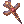
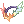
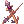

Reno's Exorcist Arch Bishop Guide
| This guide has not been updated in a while. | ||
|---|---|---|
| Information on this page may be obsolete and outdated. Please refer to the author for information on future updates. Reason: "Last update in October 2018" |
||
Due to the length of Reno's Full Support Arch Bishop Guide, the alternative AB build is separated into its own section. Here I will discuss Exorcist Arch Bishops, a.k.a. Holy Magic Caster. I refer to it as "XO AB" for short.

Although it says “Guide” on the title, a lot of the contents are based on my personal experience and observations; it’s partially a report/compilation of test results as well. I encourage you to use this guide as a starting point to find what skills and equipment setup works best for you.
Briefing
Arch Bishop is one of the four player-controlled characters (the other being Royal Guard, Expanded Super Novice, and Homunculus S Bayeri) capable of learning and using Holy element offensive skills in Ragnarok Online (excluding player-controlled characters that can equip Holy-element ammo). Offensively, Holy element is best used against Shadow and Undead element enemies, and it is also strong against Poison Lv 3 and 4.
Exorcist Arch Bishop is a very specialized type of killer, whose targets are very clearly defined as Undead and Shadow element monsters, and Demon race monsters. Their general modus operandi is to reduce the enemy’s resistance to Holy element first, then buff themselves to maximize the damage of their Holy element spells.
If you have played a Guillotine Cross or seen someone play one before, you've probably seen them use  Venom Impress followed by
Venom Impress followed by  Enchant Deadly Poison and/or
Enchant Deadly Poison and/or  Dark Claw to increase their damage. Arch Bishop is similar, difference being they're MATK-reliant, Holy element spell casters. They have a lot of buff and self-buff skills, and several debuff skills such as
Dark Claw to increase their damage. Arch Bishop is similar, difference being they're MATK-reliant, Holy element spell casters. They have a lot of buff and self-buff skills, and several debuff skills such as  Lex Aeterna and
Lex Aeterna and  Oratio that helps them deal more damage with their Holy element spells, allowing them to play multiple roles in a party; as a healer, support/buffer, debuffer, the occasional tank, and of course, damage dealer.
Oratio that helps them deal more damage with their Holy element spells, allowing them to play multiple roles in a party; as a healer, support/buffer, debuffer, the occasional tank, and of course, damage dealer.
It is important to note that almost all of the Priest class’ essential Exorcist skills require and consume Blue Gemstones. This includes Resurrection, Safety Wall, Sanctuary, Magnus Exorcismus, and Adoramus. Additionally, Exorcist Arch Bishops require specific gears to work well, and these gears are rarely sold by players in the Market. Due to these reasons, it is not recommended to create an Exorcist Arch Bishop as your first character, as a new player will struggle with the upkeep.
But why Exorcist instead of Full Support?
The short answer is; with Exorcist build you can resurrect and protect but you can also attack.
Also because I think it's a logical progression (perhaps one of many possible progressions) from playing as healer/defensive support, and a way of adjusting to recent changes in the game. Consider that:
- HP and SP leeching gears (Thanatos weapons from Ghost Palace, Rideword Hat, etc) and pets like Incubus/Succubus are relatively easy to obtain, and widely used by physical job class while farming, leveling, and instance raiding. It makes them less reliant on potions and healing skills.
- Recently-implemented instance dungeons, maps, and other content are populated by Shadow and/or Undead element enemies, and Demon race enemies.
- The addition of Doram/Summoner job class opens up new ways to play the role of tank and defensive support, which directly (and indirectly) makes a healer's job easier to do.
It's a brave new world full of nasty demons and rotten zombies. You can shoot Jesus Bolts and the Holy Disco Party don't start till you walk in. Now is the time for exorcists to shine.
Can I farm with an Exorcist Arch Bishop?
I get asked this question occasionally and the short answer to it is "Effectively, you can. Efficiently, only in certain places and with specific items/equipment."
Due to the nature of their main offensive skills (single-target Holy element magic and AoE Damage-over-Time Holy element magic that only works on specific types of monsters), there are a few places where Exorcist Arch Bishops can effectively and efficiently farm. Nifflheim fields, Cursed Abbey dungeon, Nightmare Glast Heim, Ghost Palace, and Invaded Prontera (see Banquet for Heroes and Room of Consciousness) are some of them.
You can take advantage of cards such as  Raydric Archer Card to farm
Raydric Archer Card to farm  Box of Resentment from Demon race monsters. Additionally you can use
Box of Resentment from Demon race monsters. Additionally you can use  Wraith Card to farm
Wraith Card to farm  Giggling Box from Undead race monsters, such as Nightmare Wraith Dead and farm Fabric on the side. See this list of cards for more farming ideas.
Giggling Box from Undead race monsters, such as Nightmare Wraith Dead and farm Fabric on the side. See this list of cards for more farming ideas.
Properly geared and amply prepared, it is possible for Exorcist Arch Bishop to solo instances such as Old Glast Heim, Hazy Forest, Room of Consciousness, Sky Fortress, and Geffen Magic Tournament (click here to read a mini guide on how to run GMT as an AB). For dungeons that can be entered with a party, two or more Exorcist Arch Bishops can work together to benefit each other. Alternating between casting Adoramus, Lex Aeterna, and Oratio between each other is one way to do it. Adoramus will not consume Blue Gemstones if the caster stands next to another Acolyte class character.
Bottom line, Exorcist Arch Bishops are not gonna be as flashy or fast as other physical- and magic-based classes when it comes to farming and dealing damage. On the other hand, they have their own niche, as a multi-functional and flexible class. The only thing they can't really damage with their spells are Holy element enemies, and they should watch out for enemies that can reflect magic. Everything else is fair game for an Exorcist, given enough time. The key to enjoying Exorcist Arch Bishop is to acknowledge their skills' restrictions, and work with them instead of against them. Being able to balance damage-dealing and supporting will make you a valuable, irreplaceable member in any party and any guild.
Stats
| Stat Bonus (Job Lv 60 Arch Bishop) | |||||
|---|---|---|---|---|---|
| STR | AGI | VIT | INT | DEX | LUK |
| +6 | +5 | +7 | +10 | +7 | +2 |
Similar to magic-casters such as Warlock and Sorcerer, Exorcist Arch Bishop’s main stats are INT and DEX; INT to increase their Magic Attack and overall damage dealt from their Holy magic skills, and DEX in order to minimize Variable Cast Time.
- INT: Higher INT increases your MATK, soft MDEF, MaxSP, natural SP regeneration, effectiveness of SP recovery items, resistance against status debuffs such as Silence, and reduces Variable Cast Time. Getting as many INT as possible is preferred, as it will give you more MATK bonus from
 Antique Book Card, just do not go over 120 INT, as it would be a waste of stat points.
Antique Book Card, just do not go over 120 INT, as it would be a waste of stat points.
- You need 110 INT to get the MATK bonus from
 INT Glove [1] (purchasable in Eclage).
INT Glove [1] (purchasable in Eclage). - You need 120 INT to get the MATK bonus from
 Temporal INT Boots [1]. See Temporal Boots.
Temporal INT Boots [1]. See Temporal Boots.
- You need 110 INT to get the MATK bonus from
- DEX: Higher DEX reduces your Variable Cast Time at twice the effectiveness of INT. Variable Cast Time is eliminated when you have (DEX x 2) + (INT) = 530, and you can see how much Variable Cast Time reduction you have using the
@battlestatscommand in-game. This is mainly to reduce the Variable Cast Time of skills such as Magnus Exorcismus, however you still need
Magnus Exorcismus, however you still need  Sacrament in order to reduce Fixed Cast Time. As with the case with INT, do not go over 120 DEX.
Sacrament in order to reduce Fixed Cast Time. As with the case with INT, do not go over 120 DEX.
- You need 120 DEX for the Fixed Cast Time reduction from
 Temporal DEX Boots [1] to apply.
Temporal DEX Boots [1] to apply. - Note that INT and DEX do not reduce After Cast Delay (global cooldown) and Skill Cooldown. After Cast Delay can be reduced when you're under the effect of Bard class skill
 Poem of Bragi, and if you equip certain equipment such as
Poem of Bragi, and if you equip certain equipment such as  Speedy Recovery Wand. Some equipment such as
Speedy Recovery Wand. Some equipment such as  +6 Vellum Bible reduces Skill Cooldown of certain skills. For more equipment that reduce After Cast Delay and Skill Cooldown, click here.
+6 Vellum Bible reduces Skill Cooldown of certain skills. For more equipment that reduce After Cast Delay and Skill Cooldown, click here.
- You need 120 DEX for the Fixed Cast Time reduction from
- LUK: When it becomes too costly to increase INT and DEX, consider getting some LUK, as it adds some MATK and Perfect Dodge, plus minor resistance against status debuffs. LUK is also essential to increase the success chance of
 Turn Undead. Aim for (Base LUK) + (LUK from Job Bonus) = multiples of 3. See the following examples to help determine how much LUK you should get:
Turn Undead. Aim for (Base LUK) + (LUK from Job Bonus) = multiples of 3. See the following examples to help determine how much LUK you should get:
- 13 Base LUK + 2 LUK (from Job Lv 60 Bonus) + 30 LUK (from
 Gloria) = 45 LUK
Gloria) = 45 LUK - 19 Base LUK + 2 LUK (from Job Lv 60 Bonus) + 30 LUK (from Gloria) - 6 LUK (from
 Thanatos Staff [1]) = 45 LUK
Thanatos Staff [1]) = 45 LUK - 20 Base LUK + 2 LUK (from Job Lv 60 Bonus) + 30 LUK (from Gloria) + 8 LUK (from
 Lauda Ramus Lv 4) = 60 LUK.
Lauda Ramus Lv 4) = 60 LUK.
- 13 Base LUK + 2 LUK (from Job Lv 60 Bonus) + 30 LUK (from
- VIT: You'll need this to increase your MaxHP and resistance against status debuffs. As a rule of thumb it’s a good idea to get (Base VIT) + (VIT from Job Bonus) = 100 VIT for Stun immunity. See the following examples to determine how much VIT you should get:
- 85 Base VIT + 7 VIT (from Job Lv 60 Bonus) + 8 VIT (from
 Lauda Agnus Lv 4) = 100 VIT
Lauda Agnus Lv 4) = 100 VIT - 87 Base VIT + 7 VIT (from Job Lv 60 Bonus) + 6 VIT (from Thanatos Staff [1]. See Ghost Palace) = 100 VIT
- 88 Base VIT + 7 VIT (from Job Lv 60 Bonus) + 5 VIT (from VIT Shadow Gear Set) = 100 VIT
- 93 Base VIT + 7 VIT (from Job Lv 60 Bonus) = 100 VIT
- 90 or 108 Base VIT if you're planning to wear an Armor with Dame of Sentinel Card, in order to gain the DEX bonus from the card.
- 85 Base VIT + 7 VIT (from Job Lv 60 Bonus) + 8 VIT (from
- AGI: Higher AGI increases your Flee and ASPD, and higher ASPD makes your character's casting animation to finish slightly faster. That doesn't mean AGI will reduce your cast time; more like, it will help you spam skills faster. This stat also offers resistance against Sleep, and helps with resisting and reducing the duration of Shadow Chaser class' Masquerade skills. See the following examples to determine how much AGI you should get.
- 77 Base AGI + 5 AGI (from Job Lv 60 Bonus) + 18 AGI (from Canto Candidus Lv 3 cast by an Arch Bishop at Job Lv 60) = 100 AGI.
- 83 Base AGI + 5 AGI (from Job Lv 60 Bonus) + 12 AGI (from
 Increase Agility Lv 10) = 100 AGI
Increase Agility Lv 10) = 100 AGI - Note that Canto Candidus will always overwrite Increase Agility, so the AGI bonus will not stack.
- STR: This is mainly to increase your Weight Limit, so that you can carry more healing items, skill catalysts, spare equipment, and have some resistance against Shadow Chaser class' Masquerade skills. Alternatively you can also increase your Weight Limit using Gym Passes, obtainable from the Cash Shop or by spending your Gold Coins at the Mysterious Slot Machine.
Skills
Quick Build References
Acolyte/High Acolyte
At this stage, you should focus on getting the pre-requisite skills and skills that will be used frequently for leveling, particularly Heal and Increase Agility Lv 10. Maximizing Heal, Blessing, and Increase Agility are important, as Highness Heal and Coluceo Heal will depend on the highest learned level of Heal, and both Clementia and Canto Candidus will use the highest learned level of Blessing and Increase Agility.

Acolyte skills:
- Heal Lv 10, Blessing Lv 10, Increase Agility Lv 10.
- Ruwach Lv 1, Teleport Lv 2, Warp Portal Lv 4, Pneuma Lv 1.
- Divine Protection Lv 5 (pre-requisite for Blessing).
- Aqua Benedicta Lv 1, Angelus Lv 2 (pre-requisite for Priest skills).
- Decrease Agility Lv 3 (left over skill points).
Healer with a sidearm (Judex)
Perhaps you're warming up to the idea of holding the power over life and death in both hands but you want to get better at healing before you tackle multi tasking. So while you do that, consider getting Judex. You can use it as a sidearm to fend off stragglers while you're leveling or raiding dungeons/instances with your party.

Judex doesn't deal crazy awesome damage but it is spammable and can be insta-cast (requires INT + (DEX x 2) = 530. Check your Variable Cast Time reduction with @battlestats command in-game). It's a good idea to combine Judex with Decrease Agility to slow down enemies like Guy Who Died of Caffeine Overdose Nightmare Wanderer from approaching you. The only pre-requisite for Judex is Turn Undead Lv 1, so this build is not drastically different from most Full Support builds. This build has 15 skill points remaining for you to distribute to other skills.
Healer-Adoramus Hybrid
While Judex is nice to fend off low level stragglers, you can use Jesus Bolts Adoramus to weaken and even destroy enemies. If you have Judgement set, you can use this build to level up on your own, from Lv 100 to 145-ish. In other words, this build won't be entirely dependent on Gramps parties to level up.

You will be super effective against Shadow and Undead element enemies with low MDEF and/or frequently buff themselves with Agi Up and/or Stone Skin. However, you should avoid enemies that buff themselves with Magic Mirror, and you'll have a hard time against enemies that use Hallucination Walk.
This build shines in instances such as Old Glast Heim and Bios Island, and against enemies such as Black Celestial Tendrillion in Monster Hunter. Also, try to stick as close as possible to other ABs in your party; Adoramus will not consume Blue Gemstones if you stand next to an Acolyte class character while casting it. Considering the cast time of Adoramus is purely variable (2 seconds), you can eliminate its cast time by stacking more INT and DEX from stats, buffs, stat food items, and equipment.
The Exorcist (Magnus Exorcismus + Adoramus)
See Magnus Exorcismus in action here.
This Holy Disco Party build is for those who want to go nuclear on Demons and Undeads that populate instances such as Morse Cave, Temple of the Demon God, Room of Consciousness, Nightmarish Jitterbug, Last Room, and Charleston Crisis. Additionally, this build can be particularly helpful against the final boss in Sky Fortress.
Besides ME and Adoramus, Sanctuary is also part of their offensive skill rotation when fighting Demon race and Undead element monsters. Be warned that this build is gonna need a lot of Blue Gemstones to maintain. Having a headgear with Mistress Card may make it easier but since that's beyond the budget of most players, stay close to the other AB in your party; this way, Adoramus will not consume Blue Gemstones. Getting Gym Passes would be very helpful, as it would allow you to carry more ammo and other supplies.

An important issue for this particular build is gears. You may have to bring two (or more) sets of gears and swap them according to which skill you're going to use. Alternatively you could wear Judgement set pieces (armor, weapon, garment, footgear) for Adoramus damage, and combine them with gears for increasing ME damage (Shrine Maiden Ribbon and Spiritual Ring accessory set).
If you are using the Beta client, you'll be able to use the Gear Swap feature to quickly swap between equipment sets with a click of a button, or with Alt + D. Note that there is a 10-second cooldown before you can use Gear Swap again.
After wearing your equipment normally, click the Swap Equip button in the equipment window (Alt + Q) to display the Swap Equip window. Place the gears you want to swap with in the Swap Equip window. Gears that you've placed in the Swap Equip window will have "swap arrow" icons on top of them in your Inventory window (Alt + E).
Currently the Beta client is no longer supported due to instabilities. If you still want to give it a shot, there are players that still use Beta client and may be willing to give you a copy. Perhaps the best way to do this is to ask around in NovaRO forums or in NovaRO Discord.
Skill Information
You’re probably already familiar with using Acolyte and Priest class skills to heal, support, and defend. So here we’ll look at some of their skills from another perspective, which is to weaken and deal damage on Demon race, and Undead and Shadow element monsters. For more details on recovery and supportive skills, please refer to Reno's Full Support Arch Bishop Guide.
First of all, let's take a look at how AoE skills work in Ragnarok Online. You probably have noticed that skill information in-game and from other sources describing the skill's AoE in numbers like 7x7, 11x11 but you're not really sure how large of an AoE it is, and how it's measured. Now, take a look at the simple illustration below.

For example, Pneuma has a 3x3 AoE; what this means is that it has an area of effect of (3 x 3) 9 cells, arranged in a square. Coluceo Heal Lv 2 has 15x15 AoE centered on the caster. It has an area of effect of (15 x 15) 225 cells, with the caster occupying the center cell. Coluceo Heal will affect party members standing in cells extending (15 - 1 = 14/2 = 7) 7 cells to the left, right, front, and rear of the caster.
Most AoE skills in Ragnarok Online are typically arranged in a square just like the illustration above, although there are AoE skills with unusual/exotic arrangement. Sanctuary and Magnus Exorcismus are some examples of AoE skills with unusual arrangement, being shaped like a cross. It will require some practice to be able to quickly target AoE skills accurately, and understanding how AoE skills work is just the first step.
Acolyte Skills
At this stage Heal is practically your one and only leveling skill, and you can only use it on Undead element monsters. You will also use it to level as a Priest and High Priest. Take this time to learn to differentiate between Undead element and Undead race. A handful of Undead race monsters are not Undead element (e.g. Pitman (Undead race, Earth element), Dolor of Thanatos (Undead race, Ghost element)), and therefore cannot be damaged using skills like Heal, Sanctuary, Magnus Exorcismus, etc.
| Skill | Level | Type | Description |
|---|---|---|---|
 Heal Heal
|
10 | Damage/recovery, single target | If /noshift is activated, deals Holy element magic damage on Undead element enemies. Damage dealt depends on skill level, and caster's INT and MATK. Deals more damage when equipping  Spiritual Ring combo (with Spiritual Ring combo (with  Clip [1] or Clip [1] or  Rosary or Rosary or  Rosary [1]). Rosary [1]).
If you're wearing Heal can be autocast when equipping |
 Holy Light Holy Light
|
1 | Damage, single target | (Quest skill. Talk to Platinum Skill NPC in Main Office to learn this skill) Deals Holy element magic damage on any enemy, as long as the enemy is not Holy element. Also removes Kyrie Eleison from a player. Deals more damage when the caster is under the effect of  Priest Spirit. Priest Spirit.
|
 Ruwach Ruwach
|
1 | Utility/damage, caster-centered AoE | Reveals hidden enemies within 5x5 area centered around the caster, and deals low Holy element magic damage on them.
Ruwach is generally used when you need to chase enemies that use Cloaking or Hiding, and to prevent them from sneaking up on you. |
 Pneuma Pneuma
|
1 | Defensive, ground targeting | Creates a 3x3 barrier that blocks ranged physical damage for 10 seconds. Cannot be cast near each other. Cannot be cast near or on top of Safety Wall. Cannot be cast on top of skills like Land Protector.
This is an absolutely vital defensive skill that will remain useful in end-game content and in competitive scenarios. Pneuma can be autocast when equipping |
 Decrease Agility Decrease Agility
|
0 ~ 10 | Debuff, single target | Temporarily reduces AGI and movement speed of players and normal monsters. Skill level, caster's INT, and target's MDEF affects success chance. This is especially helpful to slow down enemies with high movement speed and ASPD, and making it harder for them to break through your Kyrie Eleison/Safety Wall. See here for details.
Decrease Agility can be autocast when equipping |
 Signum Crucis Signum Crucis
|
0 ~ 10 | Debuff, caster-centered, screenwide | Reduces the physical defense of all Demon race and Undead element monsters. Skill level, caster's base level, and the enemies' level affects success chance. Generally only helpful for physical attackers, and relatively useless for magic users. Please see how Defense in Renewal works for more details.
Signum Crucis can be autocast when equipping |


Priest Skills
As a Priest, you have alternative ways to deal damage aside from Heal-bombing but you’ll have to start carrying Blue Gemstones, and get Gym Passes (see Gold Coins, Mysterious Slot Machine in Automated Events, and Cash Shop) to increase your Weight Limit and carry as many Gemstones as you possibly can. Many gears that increase your skills’ damage and reduce the cast time may be level-locked while you’re still a Priest/High Priest. If you're just starting out, it's perfectly fine to continue Heal-bombing and to use Turn Undead to hunt Undead element monsters.
On the other hand, if you have the gears for Magnus Exorcismus and/or a friend to help you tank monsters, you can start hunting Demon race monsters alongside Undead element monsters. A lot of Demon race monsters are also Shadow/Dark element, making them vulnerable against Magnus Exorcismus and Sanctuary. You can also use Magnus Exorcismus and Sanctuary on a Demon race monster that is not Shadow/Dark element such as Harpy (Demon/Wind), Demon Pungus (Demon/Poison), Medusa (Demon/Neutral), Ferre (Demon/Water and Demon/Earth), etc.
| Skill | Level | Type | Description |
|---|---|---|---|
| Magnus Exorcismus
|
1 or 10 | Damage Over Time, ground targeting, AoE | Consume 1  Blue Gemstone to create a cross-shaped 7x7 AoE that deals Holy element magic damage on Demon race and Undead element monsters. This skill deals no damage on any other monster race/element. This skill will continue to deal damage if the caster dies after successfully casting it. It will stop dealing damage if the caster is debuffed (e.g. Stunned, Frozen, Stone Cursed). Cannot be cast on top of skills like Land Protector. Blue Gemstone to create a cross-shaped 7x7 AoE that deals Holy element magic damage on Demon race and Undead element monsters. This skill deals no damage on any other monster race/element. This skill will continue to deal damage if the caster dies after successfully casting it. It will stop dealing damage if the caster is debuffed (e.g. Stunned, Frozen, Stone Cursed). Cannot be cast on top of skills like Land Protector.
The damage is increased when equipping |
 Sanctuary Sanctuary
|
3 or 7 or 10 | Fixed Damage Over Time/recovery, ground targeting, AoE | Consume 1 Blue Gemstone to create a cross-shaped 5x5 AoE that deals fixed Holy element magic damage on Demon race and Undead element normal monsters. Normal monsters will be knocked back but Boss Monsters will not. This skill deals no damage on any other monster race/element and will heal them instead. Cannot be cast on top of skills like Land Protector.
The damage is increased when equipping Sanctuary can be autocast when equipping This can be used as a pre-cast to Magnus Exorcismus, or to trigger effects such as |
| Turn Undead
|
3 or 10 | Damage, single target | Deals Holy element magic damage on a target, and has a chance to instantly kill Undead element normal monsters. The chances of insta-kill is capped at 70%. Chances of insta-kill is increased by higher skill level (+2% at Lv 1, +20% at Lv 10), base level (about +1% every 10 base levels), total INT (about +1% every 10 INT), total LUK (about +1% every 10 LUK), and if your target has less HP remaining (about +1% every 5% HP lost). Turn Undead is more likely to insta-kill an Undead element monster if it's low on health. This skill has 3 second After Cast Delay.
Turn Undead can be autocast when equipping Grand Cross or  Noble Cross. See Horror Toy Factory. |
 Resurrection Resurrection
|
4 | Damage/recovery, single target | Consume 1 Blue Gemstone to deal Holy element magic damage on a target, and has a chance to instantly kill Undead element normal monsters. It works similarly to Turn Undead of the same level. At Lv 4, this skill has 3 second After Cast Delay.
This skill and Turn Undead are very useful against Renovated Amdarais in Room of Consciousness. See Banquet for Heroes. |
 Aspersio Aspersio
|
4 ~ 5 | Damage/utility, single target | Consume 1  Holy Water to deal very low Holy element magic damage on Undead element monsters. Holy Water to deal very low Holy element magic damage on Undead element monsters.
|
 Kyrie Eleison Kyrie Eleison
|
4, 6, 8, or 10 | Defensive, single target | Applies a barrier on a target that protects it from physical damage, and prevents flinching caused by physical attacks for a set duration, or until the barrier blocks the maximum amount of hits, or until the barrier receives damage that exceeds its durability. Even skill levels increase the number of hits blocked. At Lv 10 it blocks 10 hits and has 30% of the target's MaxHP as the barrier's durability.
Kyrie Eleison can not be stacked with Assumptio. Kyrie Eleison will not protect a target from magical damage, and cannot prevent flinching caused by magical attacks. Kyrie Eleison can be autocast when equipping It's still a good idea to keep Kyrie Eleison on your hotkeys even after you've learned Praefatio, since Kyrie can be quickly cast and easily spammed while Praefatio is still on cooldown. |
 Safety Wall Safety Wall
|
10 | Defensive, ground targeting | Consume 1 Blue Gemstone to create a 1 cell barrier on the ground that blocks all melee physical attacks. Higher skill level reduces its cast time, and increases the SP cost, durability, maximum number of hits blocked (up to 11 hits at Lv 10), and duration. Its durability depends on the caster's INT and MaxSP. It will not block ranged physical attacks and magic attacks.
Safety Wall cannot be cast near or on top of Pneuma. Cannot be cast on top of skills like Land Protector. If the first hit that Safety Wall received exceeds its maximum durability, it will disappear immediately. You have to continuously spam Safety Wall when tanking monsters/Boss monsters with high ASPD and/or deals very high damage. |
| Lex Aeterna
|
1 | Debuff, single target | A target will receive doubled damage from the next attack/magic spell that hits it. This can't be cast on a Frozen or Stone Cursed target. Has 3 second After Cast Delay.
Lex Aeterna can be autocast when equipping |
 Status Recovery Status Recovery
|
1 | Debuff/recovery, single target | Inflicts Blind on Undead element monsters. Returns an aggro-ed monster back to its passive state (does not work on naturally aggressive monsters). Removes  Stasis, Stasis,  White Imprison and White Imprison and  Poem of Netherworld from a target. Poem of Netherworld from a target.
Status Recovery is enabled when equipping |
 Lex Divina Lex Divina
|
5 ~ 10 | Debuff/recovery, single target | Has a chance to inflict Silence on a target. Higher level reduces the SP cost and increases the Silence duration. Using this skill on a Silenced target will remove the debuff from them. Targets with low INT, VIT, and LUK are more likely to be Silenced, and will take longer to recover from it. This skill will not work on Boss monsters.
Lex Divina can be autocast when equipping |

High Priest Skills
Baby Arch Bishop and non-Transcendent Arch Bishop will not be able to learn these skills. With that said, Transcendent skills for Priest class are not incredibly vital for Exorcist build. Arguably, Meditatio is still useful for Heal-bombing on early levels and SP regeneration on higher levels.
| Skill | Level | Type | Description |
|---|---|---|---|
 Assumptio Assumptio
|
3 ~ 5 | Defensive, single target | Doubles the target's Hard DEF and Hard MDEF. Higher skill level increases the cast time, After Cast Delay, duration, and SP cost. Assumptio cannot be stacked with Kyrie Eleison.
It is best used on tanks with high Hard Def (e.g. Royal Guard), and for resisting physical and magical attacks that can't be easily dodged or blocked (e.g. Water Ball). This skill does not prevent flinching when you're being hit by physical and magical attacks. Assumptio can be autocast when equipping Ring of Resonance or |
 Meditatio Meditatio
|
5 ~ 10 | Passive, self buff | Permanently increases MaxSP, SP regeneration, and amount of HP recovered by Heal.
If you're a High Priest leveling by Heal-bombing, it's best to maximize this skill. |
 Basilica Basilica
|
0 ~ 5 | Defensive, caster-centered, ground targeting | Consume 1 Holy Water, 1 Blue Gemstone, 1 Red Gemstone, and 1 Yellow Gemstone to erect a 5x5 barrier centered around the caster. The caster must stand in a 7x7 area free of obstacles in order to begin casting Basilica.
Anyone inside the barrier cannot use attacks, and anything outside the barrier cannot attack anyone inside it. Higher skill level increases its cast time, After Cast Delay, SP cost, and duration. Cannot be cast inside WoE castles. This is a highly situational skill that may only be useful when your party does not have a Sorcerer that can cast Land Protector. |
 Spiritual Thrift Spiritual Thrift
|
0 ~ 5 | Passive, self buff | Permanently reduces the SP cost of skills, up to -20% at Lv 5.
Generally only useful for Melee/Battle Priest build with low INT/very low MaxSP. |
Arch Bishop Skills
Praise Odin’s Glorious Beard and Bless Freya’s Bountiful Bosoms, Arch Bishops finally have more attack spells that deal damage on something other than Demon race and Undead element enemies. Those spells are Holy element though, so it’s a good idea to stick with leveling on Undead and Shadow element monsters.
| Skill | Level | Type | Description |
|---|---|---|---|
 Adoramus Adoramus
|
10 | Damage, single target | Consume 1 Blue Gemstone to deal Holy element magic damage on a target in 10 hits, and has a chance to inflict Decrease Agility and/or Blind on the target.
The damage is increased with higher skill level and base level (up to approximately 2625% MATK at Lv 175, using Lv 10 Adoramus). The chances of inflicting Decrease AGI and Blind on a target is increased with higher skill level and job level (up to approximately 70% chance at Job Lv 60, using Lv 10 Adoramus). Has 2 second Skill Cooldown and currently in NovaRO there is no way to reduce this cooldown. The damage is increased by 200% when equipping Mace of Judgement [2] (Lv 100) or If the caster stands next to an Acolyte-based character when casting Adoramus, it will not consume the caster's Blue Gemstone but will consume 12 SP from the other character. Adoramus can be instacast. |
 Judex Judex
|
5 | Damage, single target, splash | Deals Holy element magic damage on a target and enemies in a 3x3 area around it in 3 hits. The damage is increased with higher skill level and base level (up to approximately 700% MATK at Lv 175, using Judex Lv 5).
The damage is increased by 30% when equipping Shoes of Judgement, and increased by 10% when equipping Judex's low cast time, low Skill Cooldown, and splash damage makes it useful for triggering equipment effects (e.g. Wickebine's Black Cat Ears, Zaha Doll Hat) while dealing damage on a pack of mobs. To properly utilize Judex, I recommend wearing Crimson Bible, Vicious Mind Book, or Ledger of Death (refined to +10 or higher) with Faithful Manager Card or MDEF-piercing card combo. While it's possible to apply Malangdo enchants on Ledger of Death, you may also consider Sage's Diary, Principles of Magic, Ancient Magic, or Encyclopedia + Revised Encyclopedia combo. Alternatively you may use Mace type weapons with MATK attribute such as Mace of Judgement, Thanatos Hammer, or Infinity Mace with Spell 5 ~ Spell 8 enchants (see Infinite Space). With Marsh Arclouse Card, 185 ~ 193 ASPD, 100% Variable Cast Time reduction, Sacrament Lv 5, Temporal DEX Boots, Minstrel buffs, and |
 Highness Heal Highness Heal
|
2 ~ 5 | Damage/recovery, single target | Deals Holy element magic damage on Undead element monsters.
Has 3 second Skill Cooldown that can only be reduced by wearing For details on how to get it yourself, please read the following guides (thoroughly!) and be sure follow every single step; Mora Enchants, Mora Daily Quests, Wandering Guardian Quest, and Hazy Forest Instance Dungeon. Otherwise you can buy Light of Cure from other players but make sure it has the correct enchants. |
 Renovatio Renovatio
|
1 | Damage/healing over time, single target | Deals low Holy element magic damage on Undead element monsters. Can be used on Barricades in WoE 2.0 castles to restore their durability.
Renovatio can be autocast when equipping |
 Praefatio Praefatio
|
5 ~ 10 | Defensive, caster and party members only | Applies barriers on the caster and all party members onscreen that block physical damage and prevent flinching from physical attacks. The durability is 30% of the player's MaxHP.
Higher skill level increases the number of hits the barrier blocks (up to 16 hits), lengthens the Skill Cooldown (up to 40 seconds), and increases the SP cost. More party members increases the barrier's defense bonus. |
 Odin's Power Odin's Power
|
1 ~ 2 | Buff/debuff, single target | Increases a target's ATK and MATK, while reducing DEF and MDEF. Hold Shift (or activate /ns command) to use this on an enemy.
Odin's Power Lv 1 is enabled when equipping |
 Offertorium Offertorium
|
1 ~ 5 | Self buff/recovery | Removes various debuffs from the caster (Bleeding, Hallucination, Mandragora Howling, GX poisons, etc), and temporarily increases the HP recovered/damage dealt when the caster uses Heal, Sanctuary, Coluceo Heal, and Highness Heal, while simultaneously increasing the SP cost of those skills. Higher skill level reduces Offertorium's cast time, increases Offertorium's SP cost, and increases the effectiveness (up to +150%) and SP cost (up to +200% SP cost) of healing skills. Casting Offertorium will remove Magnificat, vice versa.
A full support build may maximize this skill but for an exorcist, getting this skill at Lv 1 is sufficient for when you need to quickly remove debuffs from yourself. You can cast Sanctuary then follow it up with Offertorium to boost Sanctuary’s damage and HP recovery amount, while bypassing the initial extra SP cost. |
 Full Throttle Full Throttle
|
0 ~ 5 | Self buff/recovery | Fully restores your HP, and temporarily increases movement speed and increases base stats by 20%. Skill level increases the duration, for up to 30 seconds at Lv 5. Has a 30 minute cooldown.
After Full Throttle ends you will be inflicted by Rebound temporarily. During Rebound your movement speed decreases and your natural HP and SP recovery is disabled. The long cooldown makes this skill’s functionality rather dubious, however you can use the additional stats to slightly boost your MATK and reduce Variable Cast Time for a short period of time. |
| Oratio
|
5 ~ 10 | Debuff/utility, caster-centered AoE | Decreases the Holy resistance of enemies in a 31x31 area for 30 seconds. Higher skill level increases the chance (up to 90% chance), and the percentage of Holy property resistance reduction (up to 20% resistance reduction). Oratio affects normal monsters, Boss monsters, and invisible enemies (Hiding, Cloaking, Hide).
Oratio can be autocast when equipping A good pre-cast to use especially when facing enemies that often use Hiding/Cloaking. |
 Clearance Clearance
|
1 ~ 5 | Debuff, single target (party member and normal monster only) | Removes various debuffs and statuses from a target. Higher skill level increases the success rate (68% at Lv 1, up to 100% at Lv 5) and SP cost.
Has 10 second Skill Cooldown that can be reduced when wearing Clearance is mainly used in WoE situations, and in instance dungeon raids to remove buffs from a normal monster, or as an alternative to Dispell for removing Steel Body and Berserk, and to remove debuffs that can’t be removed with your other recovery skills. |
 Silentium Silentium
|
0 ~ 5 | Debuff, caster-centered AoE | Attempts to inflict Silence on all enemies around the caster.
Higher skill level increases the AoE (9x9 at Lv 1, up to 17x17 at Lv 5), the Silence duration, and the SP cost. Success rate is affected by the target's base level, VIT, and LUK. |

Understanding Magnus Exorcismus
First of all, we must distinguish between Undead Race and Undead Element. This is because Magnus Exorcismus and Sanctuary only deal damage on Demon Race and Undead Element monsters. Sanctuary will deal damage on all Undead element monsters, and all Demon race monsters regardless of its element. On everything else, Magnus Exorcismus has no effect, and Sanctuary will heal anyone that steps into it. You must always be mindful of the race and element of enemies you are fighting against.
Before you cast ME, you can use the @mi command in-game to check detailed monster info. The following tables show a small sample of monsters and MVPs, and how you can deal damage to them using your main offensive skills (Adoramus, ME, Sanctuary, Heal, and Highness Heal).
| MVPs and Monsters | ||||||
|---|---|---|---|---|---|---|
| Name | Race | Element | Does Adoramus have
elemental advantage against it? |
Damaged by
Magnus Exorcismus? |
Damaged by
Sanctuary? |
Damaged by Heal
and Highness Heal? |
| Atroce | Brute | Shadow 3 | Yes | No | No | No |
| Dark Lord | Undead | Undead 1 | Yes | Yes | Yes | Yes |
| Detale (Detardeurus) | Dragon | Shadow 2 | Yes | No | No | No |
| Fallen Bishop Hibram | Demon | Shadow 2 | Yes | Yes | Yes | No |
| Kiel D-01 | Formless | Shadow 2 | Yes | No | No | No |
| Lord of the Dead | Demon | Shadow 3 | Yes | Yes | Yes | No |
| Tao Gunka | Demon | Neutral 3 | No | Yes | Yes | No |
| Wickebine Tres | Demi Human | Poison 3 | Yes | No | No | No |
| Seyren Windsor | Demon | Fire 3 | No | Yes | Yes | No |
| Assassin Cross Eremes | Demi Human | Poison 4 | Yes | No | No | No |
| Chen | Demon | Water 4 | No | Yes | Yes | No |
| Champion Chen | Demon | Water 4 | No | Yes | Yes | No |
| Gertie | Demon | Poison 4 | Yes | Yes | Yes | No |
| Stalker Gertie | Demon | Poison 4 | Yes | Yes | Yes | No |
| Instance Dungeon MVPs and Monsters | ||||||
|---|---|---|---|---|---|---|
| Name | Race | Element | Does Adoramus have
elemental advantage against it? |
Damaged by
Magnus Exorcismus? |
Damaged by
Sanctuary? |
Damaged by Heal
and Highness Heal? |
| Bangungot | Demon | Shadow 2 | Yes | Yes | Yes | No |
| Brinaranea | Demon | Water 3 | No | Yes | Yes | No |
| Muspelskoll | Demon | Fire 3 | No | Yes | Yes | No |
| Despair God Morroc | Demon | Shadow 2 | Yes | Yes | Yes | No |
| Charleston 3 | Demon | Neutral 3 | No | Yes | Yes | No |
| T_W_O | Demon | Shadow 3 | Yes | Yes | Yes | No |
| Root of Corruption | Demon | Earth 3 | No | Yes | Yes | No |
| Gigantes | Demon | Shadow 1 | Yes | Yes | Yes | No |
| Black Celestial Tendrillion (3150) | Demon | Shadow 3 | Yes | Yes | Yes | No |
| Jitterbug | Demon | Shadow 3 | Yes | Yes | Yes | No |
| Awakened Ferre | Undead | Undead 3 | Yes | Yes | Yes | Yes |
| Grim Reaper Yanku | Undead | Undead 4 | Yes | Yes | Yes | Yes |
| Celine Kimi | Undead | Ghost 1 | No | No | No | No |
| (Hard) Amdarais | Undead | Undead 4 | Yes | Yes | Yes | Yes |
| (Hard) Grudge of Royal Knight | Undead | Undead 2 | Yes | Yes | Yes | Yes |
| (Hard) Corrupted Abysmal Knight | Undead | Shadow 4 | Yes | No | No | No |
| (Hard) Suffering Khalitzburg | Undead | Undead 1 | Yes | Yes | Yes | Yes |
| (Hard) Corrupted Bloody Knight | Undead | Shadow 4 | Yes | No | No | No |
| Faceworm Queen | Insect | Poison 4 | Yes | No | No | No |
It’s very important to understand that Magnus Exorcismus is not a burst damage spell. It’s a damage-over-time spell that deals damage in waves, where the total damage is shown in large yellow numbers, at 3 second intervals. At level 10, it will inflict 10 hits of 100% Holy element magic damage in one wave, and a monster can receive up to 5 waves. This whole process will take around 14 seconds.
- For example, the Immortal Corps in the screenshot below received 3,499 damage x 10 hits = 34,990 damage from one wave of Magnus Exorcismus. Hits are shown in white numbers. Wave damage (or the damage bundle, the total damage from all hits) is shown in large yellow numbers.
- If that Immortal Corps received the full damage from Magnus Exorcismus, in 14 seconds it will receive roughly 30,000 damage x 5 waves = 150,000 damage (note that MATK has a range which will cause your damage to fluctuate somewhat).
- If that Immortal Corps was under Lex Aeterna, it would receive ((3,499 damage x 10 hits) x 2) 69,980 damage from one wave of Magnus Exorcismus. Lex Aeterna affects the damage bundle, not the damage of each hit.


ME's cast time can be reduced to 1 second with 100% Variable Cast Time reduction (Total INT + (Total DEX*2) = 530), Sacrament, and 0.5 second Fixed Cast Time reduction of Temporal Boots of Dexterity [1]. Without After Cast Delay reducing gears, and without Poem of Bragi buff, the After Cast Delay of Magnus Exorcismus is 4 seconds. So while enemies are receiving damage from Magnus Exorcismus, you have 10 seconds to cast other skills and/or stack more damage on it.
Equipment and Cards
Judgement Set for Adoramus
Adoramus’ damage is doubled when the complete Judgement Set is equipped. The complete set also increases the damage that the wearer deals on Undead and Demon monsters, increases the wearer’s resistance against them, and includes a Shadow-element armor. Similarly to the Affection Set, all parts of the set can be enchanted, it lacks slots for cards, and it is not suitable if you often find yourself tanking non-Demon and non-Undead enemies.
| Judgement Set (Lv 100/130) | |||
|---|---|---|---|
| Set pieces | Effect | Set bonus | |
| Armor |  Robe of Judgement Robe of Judgement
|
Shadow element armor. STR +1, INT +1, MDEF +10.
Resistance against Demon & Undead race monsters +10%. Resistance against any other monster race -10%. |
With Mace of Judgement |
| Weapon | Mace of Judgement [2] | Weapon Lv 3. MATK +180, STR +1, INT +1. When using physical attacks & magic spells,
has a chance to deal 20% more damage on Demon race monsters for 7 seconds. |
Damage against Undead +15%. Adoramus damage +200%. Adoramus SP cost +30. |
 Empowered Mace of Judgement [1] Empowered Mace of Judgement [1]
|
(Lv 130) Weapon Lv 4. MATK +180, STR +2, INT +2. When using physical attacks & magic spells,
has a chance to deal 40% more damage on Demon race monsters for 7 seconds. |
With Empowered Mace of Judgement | |
| Garment |  Shawl of Judgement Shawl of Judgement
|
Flee +5. Chance to autocast Oratio Lv 2 (or at the highest level learned by the wearer) on all enemies when receiving physical/magical attack. | Damage against Undead +30%. Adoramus damage +200%. Adoramus SP cost +30. |
| Footgear | Shoes of Judgement | MaxSP +150. Judex damage +30%. Judex SP cost +40. | |
- All parts of the Judgement set can be purchased with Mora Coins from Keeper of Secrets in Mora
/navi mora 89/90. See Wandering Guardian quest, Hazy Forest instance dungeon, Mora Daily Quests, and Mora Enchants for details on how to obtain and enchant them. - You'd want to get stat enchants on Judgement set pieces, such as DEX +4, INT +2 ~ +4, and MATK +2%, or defensive enchants such as MDEF +6.
- If refined to +9, Empowered Mace of Judgement can receive magic type enchants such as:
- Alternatively, you can browse the Vending page and buy Mace of Judgement, Robe of Judgement, Shawl of Judgement, and Shoes of Judgement from other players.
- Additionally, you can search for cheap Light of Cure, Seal of Cathedral, or Ring of Archbishop in the Vending page or in @go market in-game. Carry the rings on a non-Arch Bishop character, and talk to the Keeper of Secrets NPC, then select the exchange ring options to exchange one ring into 10 Mora Coins. Use the Mora Coins to buy Judgement set from the NPC.


You can wear the Judgement Set when you're leveling solo, then swap to your healing/support gears when you're leveling in a party. Note that Robe of Judgement makes you more vulnerable against most monster races, and very weak against Holy element. You can mitigate this somewhat by carrying multiple Shields containing racial resist cards such as Thara Frog (Demi Human), Orc Warrior (Brute), Big Foot (Insect), Rafflesia (Fish).
Besides the Gray Armor Set, the Arch Bishop-only Robe of Affection, Priest skill B.S. Sacramenti, and Royal Guard skill Piety, Holy resistance is usually difficult to obtain, or too expensive for most people to afford. It is crucial to swap out the Robe of Judgement when you're facing enemies that use Holy attacks/spells.
Headgear
| Type | Equipment | Description | How to obtain |
|---|---|---|---|
| Top Headgear | Mitra [1] | (Lv 100) If base INT is 120, MATK +10.
Basic headgear for budget-conscious exorcists. |
Received when job changing into Arch Bishop. |
 Vibrant Rose [1] Vibrant Rose [1]
|
MATK +20. Every refine level, additional MATK 5. | Purchase with Bloody Coins from Horror Toy Factory | |
 Celine's Ribbon [1] Celine's Ribbon [1]
|
DEX +3, MATK +40. Every refine level, additional MATK +7.
Excellent for general use. |
Craft with Quyen /navi xmas 240 297 (see Horror Toy Factory)
| |
| Wickebine's Black Cat Ears | Critical attack damage +10%. When using magic attacks, 5% chance to ignore MDEF of the enemy for 5 seconds. Flee +10.
The best choice against enemies with very high MDEF. Suitable if you're casting Sanctuary, Magnus Exorcismus, and Judex to trigger the MDEF-piercing effect. |
Craft via the Custom Headgear Quest. | |
 Ancient Gold Ornament [1] Ancient Gold Ornament [1]
|
(Lv 100) If equipped by Acolyte class, MATK +8%, Heal effectiveness +7%.
Suitable for hybrid support-exorcists. |
Wolfchev's Laboratory, Biolab Gear | |
| Tam [1] | (Lv 50) MATK +2%. Increase MATK every refine level. | Cash Shop | |
 Skull Cap [1] Skull Cap [1]
|
(Lv 10) MATK +2%. If refined to +5, additional MATK +3%. If refined to +7, additional MATK +3%. | Cash Shop | |
| W Doll Hat [1] | (Lv 60) Additional 5% damage on Undead race monsters when using physical and magic attacks. Decrease damage from Demi Human monsters by 5%. | Kafra Doll Box in Cash Shop | |
| Chibi Pope [1] | MDEF +7, Heal effectiveness +5%. If equipped with Blush, additional Heal effectiveness +10%. If upgraded to +6 or higher, increase Heal effectiveness.
If upgraded to +9, MATK +7%. If upgraded to +12, additional MATK +5%. Perhaps the best headgear for support-exorcist hybrids but only if refined to +9 or higher. |
Purchase with Gold Coins in Prontera Main Office | |
| Husky Hat [1] | (Lv 70) MATK +5%, ATK +5%. Has 1% chance of autocasting Wind Walk Lv 5 while using physical attack. Every refine level, autocast Wind Walk chance +0.3%. | Contained in the Summer Festival Crate in Cash Shop. | |
 Moon Rabbit Hat [1] Moon Rabbit Hat [1]
|
MATK +5%. If upgraded to +5 or higher, additional MATK +1% every refine level. | Purchase with Gold Coins from The Claw in Eden HQ. Contained in the Springtime Hat Box in Cash Shop. | |
| Pink Pajama Hat | MATK +5%. | Purchase with Gold Coins from The Claw in Eden HQ | |
| Red Pom Band [1] | MDEF +5, MATK +5%. Every refine level starting from +6 increases magic damage against Demi Human by 1%, and reduce damage received from Demi Human by 1%.
Suitable for Biolabs, PvP, BG, and WoE but only if refined to +6 or higher. |
Purchase with Siege Tokens (see Arena of the Abyss). | |
 Zaha Doll Hat [1] Zaha Doll Hat [1]
|
INT +3, MDEF +9, magic damage on Undead element monsters +10%.
Has a chance to temporarily transform into White Lady when using magic attacks. While transformed, MATK +30 every refine level, Fixed Cast Time reduced according to refine level (800 ms Fixed Cast Time reduction at +4), drain 10 SP per second. Higher refine level extends the transformation time. The Fixed Cast Time reduction makes this headgear suitable for Magnus Exorcismus, especially if you're concerned with achieving instant-cast. |
Purchase with Siege Tokens (see Arena of the Abyss). Also obtainable from the Plushie Claw mini game during the Summer Festival Event. | |
| Drooping Neko Crew [1] | INT +2, MDEF +5. Magic attacks will ignore 5% MDEF of Normal and Boss monsters. Every refine level, ignore an additional 1% MDEF.
If refined to +7, MATK +2%, ignore an additional 5% MDEF. If refined to +9, MATK +5%. At +9 this headgear should ignore 19% MDEF of Normal and Boss monsters, making it suitable against enemies with high MDEF. |
Obtainable from the Plushie Claw mini game during the Summer Festival Event. | |
| Middle Headgear | Tear Drop | (Middle and Lower Headgear) MATK +3%, healing effectiveness +1%.
Suitable for hybrid support-exorcists. |
Contained in the 2017 MLG Box in the Cash Shop |
 Robo Eyes Robo Eyes
|
MATK +2%, DEX +1 | Cash Shop | |
 Sigrun's Wings Sigrun's Wings
|
If equipped by Acolyte class, MATK +5, healing effectiveness +2%. | Cash Shop | |
 Black Frame Glasses [1] Black Frame Glasses [1]
|
(Lv 70) INT +1, MDEF +2. The slotted version can be crafted with Spiritual Auger. | Purchase in Cash Shop (see Spiritual Auger) | |
 Blush [1] Blush [1]
|
Set with Chibi Pope. | See Spiritual Auger in Cash Shop | |
 Monocle [1] Monocle [1]
|
N/A | Dropped by Owl Marquees and Owl Viscount | |
| Lower Headgear |  Rainbow Scarf Rainbow Scarf
|
(Lv 90) INT +1, MDEF +2, MATK +1%. | Cash Shop |
| Ninja Scroll | MATK +1%. | Cash Shop | |
| (Lv 10) INT +1. | Purchase with Gold Coins from The Claw in Eden HQ | ||
| Bubble Gum In Mouth | MATK +5 | Purchase with Gold Coins from The Claw in Eden HQ |
Spare Armors
| Item | Description | How to obtain |
|---|---|---|
 Hero Judgement Shawl [1] Hero Judgement Shawl [1]
|
MaxHP and MaxSP +5%, MATK +10, Judex and Adoramus damage +10%.
Chance to autocast Lex Aeterna on an enemy when the wearer uses magic attacks. Chance to autocast Kyrie Eleison Lv 10 on self when the wearer uses physical attacks. Autocast chance increases according to upgrade level. |
Prize of Hero |
 Diabolus Robe [1] Diabolus Robe [1]
|
MaxSP +150, MDEF +5, After Cast Delay -10%, Healing effectiveness +6%.
If equipped with Diabolus Ring, MATK +3%. |
Dropped by Wounded Morocc and Satan Morocc. |
| Orleans' Gown [1] | Cast Time +15%, uninterruptible cast. | Dropped by Banshee. |
| Geffen Magic Robe [1] | Skill SP consumption -10%, Variable Cast Time +15%, uninterruptible cast.
If equipped with Magic Intensifier Ring, Variable Cast Time -5%. |
Geffen Magic Tournament |
| Robe of Affection | Clementia SP cost -50. INT +1, MDEF +10. Holy element. | Mora Coins |
Shield
| Item | Description | How to obtain |
|---|---|---|
 Mad Bunny [1] Mad Bunny [1]
|
MATK +5%.
If refined to +7, MATK +5. If refined to +9, MATK +15. If refined to +12, uninterruptible cast time. |
Cash Shop |
 Immune Shield [1] Immune Shield [1]
|
If refined to +5 or higher, Neutral attack resistance +1% every refine level, up to +12.
If refined to +7, Neutral resistance +5%. If refined to +9, Water, Earth, Fire, and Wind resistance +5%. |
Purchase with Valor Badges in Battlegrounds.
Purchase with Monster Coupons in Monster Hunter. Purchase with Gold Coins in Eden HQ. Purchase with Proof of Loyalty in Main Office. |
 Gray Shield [1] Gray Shield [1]
|
MDEF +10, Holy resistance +30%.
Every refine level, Holy resistance +1%. Every 3 refine levels, MDEF +1. |
Ghost Palace |
 Bible of Promise Vol. 1 [1] Bible of Promise Vol. 1 [1]
|
Enables Odin's Power Lv 1. | Mora Coins |
 Bible of Promise Vol. 2 [1] Bible of Promise Vol. 2 [1]
|
MDEF +5, Healing effectiveness +5%. Enables Odin's Power Lv 2. | Dropped by Magaleta and Randel. |
| Platinum Shield | MDEF +5. Resistance against Medium and Large sized monsters +15%.
Resistance against Undead monsters +10%. Has 40% chance to reflect magic for 2 seconds with each magic attack. |
Dropped by Sword Guardian. |
 Valkyrja's Shield [1] Valkyrja's Shield [1]
|
Water, Fire, Undead, and Shadow resistance +20%, MDEF +5. | Dropped by Valkyrie. |
 Orleans's Server [1] Orleans's Server [1]
|
MDEF +2. Has 5% chance of reflecting magic. If equipped with Orleans' Glove, Variable Cast Time -10%. | Dropped by Aliza. |
 Round Buckler [1] Round Buckler [1]
|
Basic shield for High Acolyte. | Dropped by Stalactic Golem, Orc Warrior. |
Accessory
| Item | Description | How to obtain |
|---|---|---|
| Buwaya Agimat Tattoo | MATK +7%. Fixed Cast Time -7%. | Pintados Festival |
 Pendant of Maelstorm [1] Pendant of Maelstorm [1]
|
MATK +6%. All Stats +1. Chance to autocast Maelstrom Lv 1 when receiving magic attacks. | Nightmarish Jitterbug |
 Pendant of Harmony Pendant of Harmony
|
MATK +6%. HP and SP recovery +50%. Holy resistance +5%. Chance to autocast Renovatio on self and/or Sanctuary Lv 3 when receiving physical attacks. STR -5. | Nightmarish Jitterbug |
 Magic Intensifier Ring [1] Magic Intensifier Ring [1]
|
MATK +5%. If equipped with Geffen Magic Robe, Variable Cast Time -5%.
It can be enchanted and gain MATK +1%, up to two MATK 3% enchants; or gain 5% VCT reduction, up to two 7% VCT reduction enchants. |
Geffen Magic Tournament |
 Medal of Honor (Acolyte) Medal of Honor (Acolyte)
|
MATK +5%, MDEF +6, MaxHP +600. Chance to inflict Silence on an enemy when using melee attacks.
If equipped with |
Battlegrounds |
 Orleans's Glove [1] Orleans's Glove [1]
|
MATK +3%, DEX +2. If equipped with Orleans' Server, Cast Time -10%. | Dropped by Bow Guardian. |
 Sheriff's Right Badge [1] Sheriff's Right Badge [1]
|
If base INT is 90 or higher, MATK +3%.
If base DEX is 90 or higher, Variable Cast Time -5%. If base VIT is 90 or higher, MaxHP +1000. |
Complete Fistful of Zeny quest. |
| INT Glove [1]
|
MaxHP +100, MaxSP +20. Every 10 base INT, MATK +1. If base INT is 110 or higher, MATK +1%. | Purchase in Eclage with Splendide Coins. |
 Bradium Earring [1] Bradium Earring [1]
|
MATK +5, INT +1, DEX +1. | Reward from completing Frede's Request. |
 Light of Cure Light of Cure
|
VIT +2. Healing effectiveness +2%. If enchanted with  Cure Lv.1, Highness Heal cooldown -3 seconds. Cure Lv.1, Highness Heal cooldown -3 seconds.
|
Mora Coins |
|  Sprint Ring | Variable Cast Time -10%. After Cast Delay +5%. | Dropped by Luciola Vespa. |
| Diabolus Ring [1] | MaxHP +100, MaxSP +100. Healing effectiveness +5%.
If equipped with Diabolus Robe, MATK +3%. |
Dropped by Ghost Incarnation of Morroc. |
| Expert Ring [1] | After Cast Delay -5%. Skill SP consumption +5%. | Dropped by Ragged Zombie. |

- Shadow Gears: INT Set from Domovoi (INT +5, MATK +5) or DEX Set from Celestial Tendrillion (DEX +5, Variable Cast Time -5%). See Monster Hunter for details.
Magnus Exorcismus Gears
Magnus Exorcismus' (ME) long cast time makes it impractical to use before you have high enough stats and other cast time reducing gears, and its damage may be lacking without gears that specifically increases its damage. On the other hand, once you're wearing the appropriate gears, you can cast ME to assist your party when dealing against Demon race, and Undead element monsters.
| Magnus Exorcismus Damage Set | ||||
|---|---|---|---|---|
| Set pieces | How to obtain | Effect | Set bonus | |
| Top Headgear | Cash Shop | (Lv 100) Magnus Exorcismus damage +30%. Every 2 refine levels, additional Magnus Exorcismus damage +5%.
If refined to +7, gives 5% chance of autocasting Heal (at the level learned by the wearer) when receiving physical/magical damage. If refined to +9, Fixed Cast Time -1%. |
N/A | |
| Weapon |  Holy Stick [1] Holy Stick [1]
|
Dropped by Entweihen Crothen | (Lv 70) Weapon Lv 4, Holy element. MATK +140. Holy Light, Turn Undead, and Magnus Exorcismus' Variable Cast Time -25%. | Magnus Exorcismus damage +20%.
When receiving damage, low chance of autocasting Turn Undead Lv 1 on an enemy. |
| Shield | Exorcism Bible | Dropped by Ghost Incarnation of Morroc | (Lv 50) INT +1, HP & SP recovery +3%. | |
| Accessory 1 | Spiritual Ring
|
Dropped by Fallen Bishop Hibram, Ifrit | (Lv 1) INT +2, DEX +1 | Magnus Exorcismus damage +30%.
Heal damage against Undead element monsters +50%. SP Recovery +9%. |
| Accessory 2 | Clip [1]
|
Dropped by Alarm, Laurell Weinder, Dragon Fly, Big Bell | (Lv 1) MaxSP +10 | |
| Rosary
|
Purchase in Prontera Church. Dropped by Dark Priest, Nightmare Terror. | (Lv 20) LUK +2, MDEF +5 | ||
| Rosary [1]
|
Dropped by Aliza. | (Lv 90) LUK +1, MDEF +3 | ||
- This is the go-to set for increasing Magnus Exorcismus damage. I personally found that the global cooldown caused by autocast Turn Undead from Holy Stick + Exorcism Bible combo to be disruptive (since I don't always party with a Bard class character).
- Usually I'd ditch Holy Stick and Exorcism Bible (or just the Bible) and wear a different weapon and shield, since I'm particularly fond of the MDEF-piercing card sets of Nightmare Mimic Card + Nightmare Arclouse Card and Big Ben Card + Neo Punk Card. Overupgrading Shrine Maiden Ribbon is important to compensate for the ME damage loss from not wearing Holy Stick + Exorcism Bible combo.
Other equipment sets for Magnus Exorcismus
| Morpheus Set (Lv 33) | ||||
|---|---|---|---|---|
| Set pieces | Effect | How to obtain | Set bonus | |
| Top Headgear |  Morpheus's Hood Morpheus's Hood
|
INT +2 | Dropped by Hydrolancer/Hydro | Uninterruptible cast, Variable Cast Time +25%.
INT +5, MDEF +11, MaxSP +20%. |
| Garment |  Morpheus's Shawl Morpheus's Shawl
|
MDEF +3, MaxSP +10% | Dropped by Aliza | |
| Accessory 1 |  Morpheus's Bracelet Morpheus's Bracelet
|
INT +1, MaxSP +5% | Dropped by Detale/Detardeurus MVP | |
| Accessory 2 |  Morpheus's Ring Morpheus's Ring
|
INT +1, MaxSP +5% | ||
- This is especially for beginner Priests and aspiring Baby Exorcists that need uninterruptible casting from something other than Phen/Bloody Butterfly Card.
| Gentleman Staff Set (Lv 50) | ||||
|---|---|---|---|---|
| Set pieces | How to obtain | Effect | Set bonus | |
| Weapon |  Gentleman Staff [1] Gentleman Staff [1]
|
Dropped by Owl Baron | Weapon Lv 4. MATK +125, DEX +1. | DEX +2, INT +2, SP recovery +5%. Increase MATK according to the refine level. |
| Top Headgear | Magician Hat | Dropped by Owl Baron, Owl Duke | DEX +1, AGI +1, MaxSP +50 | |
| Modified Magician Hat [1] | Eden Group Crystal Synthesis | DEX +1, AGI +1, MaxSP +50. Every refine level, additional MaxSP +5.
If refined to +7, each refine adds DEX +1. |
? | |
- I'm not quite sure if Modified Magician Hat will activate the set bonus... regardless, this is an optional weapon-headgear set to consider if you're the type who's generally lucky with farming, refining, and enchanting.
| Divine Cross Set (Lv 70) | ||||
|---|---|---|---|---|
| Set pieces | How to obtain | Effect | Set bonus | |
| 2-Handed Weapon |  Divine Cross | Dropped by Skeggiold | (Lv 70) Weapon Lv 4, Holy element. MATK +210, DEX +4. Resistance against Undead & Demon enemies +15%. | MATK +10%, DEX +2, additional resistance against Undead & Demon enemies +10%. |
| Accessory | Spiritual Ring
|
Dropped by Ifrit MVP, Fallen Bishop Hibram MVP | INT +2, DEX +1 | |
- The classic exorcist set from Pre-Renewal era; and yes, that's the same Spiritual Ring that's part of the set that increases ME damage. This set gives considerable MATK% bonus, although you're gonna have to be extremely lucky with enchanting Divine Cross to make this set really shine.
| Sprint Set (Lv 70 High Acolyte/High Priest) | ||||
|---|---|---|---|---|
| Set pieces | Effect | How to obtain | Set bonus | |
| Armor | Sprint Mail [1] | VIT +1, HP recovery +5%. Healing item effectiveness and effectiveness of healing received from others +3%. | Dropped by Cornus | MaxHP & MaxSP +7%. Variable Cast Time -3%. After Cast Delay -15%. |
| Footgear |  Sprint Shoes [1] Sprint Shoes [1]
|
AGI +1, SP recovery +5%. | Dropped by Hillslion | |
| Accessory | Sprint Ring | Variable Cast Time -10%, After Cast Delay +5%. | Dropped by Luciola Vespa | |
- The 4 second After Cast Delay of ME can be disastrous, and not everybody has a friend who is also a dedicated Bard class player (or willing/able to multi-client a Bard). The alternative is to wear equipment with After Cast Delay reduction such as Sprint Set or Diabolus Robe.
- All parts of Sprint Set are dropped by monsters in New World fields. See Cat Hand Services for details on how to access New World fields.
| Diabolus Set (High Acolyte/High Priest) | ||||
|---|---|---|---|---|
| Set pieces | How to obtain | Effect | Set bonus | |
| Armor | Diabolus Robe [1]
|
Dropped by Satan Morroc MVP and Wounded Morroc MVP (see Continental Guard Quest). | (Lv 55 High Acolyte) MaxSP +150, MDEF +5, After Cast Delay -10%, healing effectiveness +6%.
Talk to Apprentice Craftsman |
ATK & MATK +3%. |
| Accessory | Diabolus Ring [1] | Dropped by Incarnation of Morroc (Ghost) | (High Priest) MaxHP +100, MaxSP +100, healing effectiveness +5% | |
- Another old equipment set that's still relevant for (transcendent) Arch Bishops today, due to its significant After Cast Delay reduction and heal boost effects. If you'd rather keep wearing Spiritual Ring combo for the ME damage bonus, you may skip Diabolus Ring and just wear Diabolus Robe.
| Skull Cap Set | ||||
|---|---|---|---|---|
| Set pieces | How to obtain | Effect | Set bonus | |
| Top Headgear | Skull Cap [1]
|
Cash Shop | (Lv 10) MATK +2%. If refined to +5, additional MATK +3%. If refined to +7, additional MATK +3%. | Main part of the set. |
| Mid Headgear |  Elven Ears Elven Ears
|
Dropped by Giearth, Knocker | (Lv 70) Required to activate set bonus. | With Elven Ears: Skill SP Cost -3%. |
| Weapon | Evil Bone Wand | Dropped by Dark Lord MVP | (Lv 24) Weapon Lv 3, Undead element. INT +4, MATK +110. | With Evil Bone Wand: Every refine level of Evil Bone Wand, MATK +10. If Evil Bone Wand is refined to +10, skill cast time -10%. |
 Thorn Staff of Darkness Thorn Staff of Darkness
|
Dropped by Entweihen Crothen (see Endless Tower) | (Lv 75 High Acolyte/High Priest) Weapon Lv 4, Shadow element. MATK +160, INT +3, DEX +3.
Every refine level adds MDEF bypassing to your magic spells, and reduces After Cast Delay. |
With Thorn Staff of Darkness: Every refine level of Thorn Staff of Darkness, MATK +10. If Thorn Staff of Darkness is refined to +10, skill cast time -10%. | |
- This set is (used to be?) pretty popular among Mage class, and I think it would serve exorcist ABs well. The one issue I have with it is that the weapons have no slot(s) for weapon cards, so refining and enchanting them would be necessary to bring out this set's potential.
| Orleans' Set (Lv 90 High Acolyte/High Priest) | ||||
|---|---|---|---|---|
| Set pieces | Effect | How to obtain | Set bonus | |
| Shield | Orleans's Server [1]
|
MDEF +2. Has 5% chance of reflecting magic. | Dropped by Aliza | Variable Cast Time -10% |
| Accessory | Orleans's Glove [1]
|
DEX +2, MATK +3%. | Dropped by Bow Guardian | |
- Another old equipment set for Variable Cast Time reduction. Additionally you can also wear this with Orleans's Gown [1] for the uninterruptible skill casting effect.
- This set is ineffective if you're already very close to reaching 100% VCT reduction, so be sure to check with
@battlestatscommand in-game. - Consider putting Zerom Card or
 Essence of Evil DEX 3 in Orleans's Glove to further reduce your VCT. See Temple of the Demon God.
Essence of Evil DEX 3 in Orleans's Glove to further reduce your VCT. See Temple of the Demon God.
| Geffen Magic Tournament Set (Lv 99 Arch Bishop) | |||
|---|---|---|---|
| Set pieces | Effect | Set bonus | |
| Accessory | Magic Intensifier Ring [1]
|
MATK +5% | |
| Armor | Geffen Magic Robe [1] | Uninterruptible skill cast, Variable Cast Time +15%. Skill SP Cost -10%.
If refined to +7, further reduce Skill SP Cost by 5%. If refined to +9, Variable Cast Time -5%. |
Variable Cast Time -5%. |
 Anti-Magic Suit [1] Anti-Magic Suit [1]
|
MaxHP +5%, MDEF +10.
If refined to +7, additional MDEF +5. If refined to +9, additional MaxHP +2% |
After Cast Delay -5%. Resistance against Demi Human enemies +5%. | |
- All parts of the set can be purchased with Geffen Magic Tournament Coin, which is rewarded after winning each round in Geffen Magic Tournament.
- Geffen Magic Robe is essentially an improved version of Orleans Gown, plus Skill SP Cost reduction effect.
| Excellion Set | |||
|---|---|---|---|
| Set Pieces | Effect | Set Bonus | |
| Armor | Excellion Suit | VIT +6.
If Base Lv is 130 or higher, additional VIT +4. Every 3 refine levels, MaxHP +4%. Indestructible. |
Skill Delay -10%.
If Base Lv is 130 or higher, Additional Skill Delay -10%. Perfect Dodge +6. |
| Garment | Excellion Wing | Perfect Dodge +8.
If Base Lv is 130 or higher, additional Perfect Dodge +2. Every refine level, Flee +2. | |
- Excellion Set and Blueprints for its enchants can be created using Old Fuel Tanks and
 Huge Metal Scraps dropped by enemies inside Charleston Crisis instance. Visit the two robots PLUTO_09 and MARS_01 in Verus town
Huge Metal Scraps dropped by enemies inside Charleston Crisis instance. Visit the two robots PLUTO_09 and MARS_01 in Verus town /navi verus04 162/219or see Verus Equipment Exchange page for details. - The set's Skill Delay reduction is perfect to enable you to spam skills, and with the right enchants it can improve your magic damage as well. The only downside is that you can not put Armor and Garment cards in it, so cards like Banshee Master or Antique Book card are a no-go.
- Recommended enchants:
 INT Supplement Reactor: Can only be applied once on Excellion Suit. Every 10 Base INT, MATK +5. If refined to +7 or higher, MATK +10. At 120 Base INT and if applied on +7 Excellion Suit, this enchant gives 70 MATK.
INT Supplement Reactor: Can only be applied once on Excellion Suit. Every 10 Base INT, MATK +5. If refined to +7 or higher, MATK +10. At 120 Base INT and if applied on +7 Excellion Suit, this enchant gives 70 MATK. Magic Supplement Reactor: MATK +20. Can be applied up to 3 times on Excellion Suit and on Excellion Wing.
Magic Supplement Reactor: MATK +20. Can be applied up to 3 times on Excellion Suit and on Excellion Wing. Recovery 202 Reactor: SP Recovery +50%. If refined to +7, additional SP Recovery +50%. Can be applied up to 3 times on Excellion Suit and on Excellion Wing.
Recovery 202 Reactor: SP Recovery +50%. If refined to +7, additional SP Recovery +50%. Can be applied up to 3 times on Excellion Suit and on Excellion Wing. SP Supplement Reactor: MaxSP +3%. Can be applied up to 3 times on Excellion Suit and on Excellion Wing.
SP Supplement Reactor: MaxSP +3%. Can be applied up to 3 times on Excellion Suit and on Excellion Wing.
Faceworm + Temporal Set (Lv 99 Arch Bishop):  Giant Snake Skin [1] (Garment) + Any Temporal (Stat) Boots (Footgear) (e.g. Temporal DEX Boots, Temporal VIT Boots)
Giant Snake Skin [1] (Garment) + Any Temporal (Stat) Boots (Footgear) (e.g. Temporal DEX Boots, Temporal VIT Boots)
- Set bonus: MaxHP +15%, MaxSP +5%.
- Giant Snake Skins (GSS) are obtainable from Faceworm's Nest, and they come pre-refined and pre-enchanted with random stat enchants. Temporal Boots are crafted using materials obtained from Old Glast Heim.
- Besides the MaxHP and MaxSP bonus, you'd want to look for (at least) +8 GSS, unless you use cards that require the Garment to be at a specific refine level (e.g. Orc Baby Card). This is because the Special Stat enchant will give additional stats according to the GSS's refine level (up to Stat +4).
- For example, Special DEX enchant gives DEX +1, and if the GSS is refined to +8, it will give an additional DEX +3.
- For additional MATK and MaxSP: +8 GSS with
 Special INT and INT enchants (e.g. Special INT, INT +7, INT +7).
Special INT and INT enchants (e.g. Special INT, INT +7, INT +7). - To reduce Variable Cast Time: +8 GSS with
 Special DEX and DEX and/or INT enchants (e.g. Special DEX, DEX+7, DEX +7).
Special DEX and DEX and/or INT enchants (e.g. Special DEX, DEX+7, DEX +7).
- A +9 GSS with Special INT or Special DEX will also give MATK +1%.
- A +12 GSS with Special INT/Special DEX will also decrease Fixed Cast Time (FCT) by 7%. However, note that percentage FCT reduction does not stack. In other words, FCT -7% from a +12 GSS will be overwritten by Lv 5 Sacrament's FCT -50% effect.
| Ancient Rift Set - Infinite Space (Lv 100) | ||
|---|---|---|
| Set pieces | Description | Set bonus |
 Ancient Armor of Rift [1] (Armor) Ancient Armor of Rift [1] (Armor)
|
MaxHP +500, MaxSP -100. If refined to +7, MaxHP +400. If refined to +9, MaxHP +600. | Uninterruptible skill cast, MaxSP +100.
The armor can be enchanted up to INT +8 or DEX +8. The headgear can be enchanted up to MaxHP +10%, or INT +8, or DEX +8. |
 Ancient Decoration of Rift [1] (Headgear) Ancient Decoration of Rift [1] (Headgear)
|
MaxHP +1000. If refined to +7, MaxHP +400. If refined to +9, MaxHP +600. | |
| Set pieces | Description | Set bonus |
| Ancient Armor of Rift [1] (Armor)
|
MaxHP +500, MaxSP -100. If refined to +7, MaxHP +400. If refined to +9, MaxHP +600. | MaxHP +1000, healing effectiveness +5%, healing effectiveness received from others +5%.
The total refine level of the armor, garment, and footgear further increase both healing rate, up to 30. The armor and footgear can be enchanted up to INT +8 or DEX +8. The garment can be enchanted up to MaxHP +10%, INT +8, or DEX +8. |
| Manteau of Rift [1] (Garment) | MaxHP +300, MaxSP -50. If refined to +7, MaxHP +400. If refined to +9, MaxHP +600. | |
 Shoes of Rift [1] (Footgear) Shoes of Rift [1] (Footgear)
|
MaxHP +300, MaxSP -50. If refined to +7, MaxHP +400. If refined to +9, MaxHP +600. | |
- I highly recommend this set for Arch Bishops that plan to level with ME. With the right enchantments, the Ancient Rift set can minimize your Variable Cast Time, boost your MaxHP, while enabling uninterruptible casting, all of which are necessary to help you learn to utilize ME well.
- All parts of the Ancient Rift Set can be purchased (and enchanted) with
 Shattered Magic Stones, obtained from Infinite Space instance dungeon.
Shattered Magic Stones, obtained from Infinite Space instance dungeon.
| Flattery Robe Set - Banquet for Heroes (Lv 100) | ||||
|---|---|---|---|---|
| Set pieces | How to obtain | Effect | Set bonus | |
| Armor |  Flattery Robe [1] Flattery Robe [1]
|
Purchase with Honor Token. See Banquet for Heroes. | (Lv 100) MATK +50. Enables Endure Lv 1.
If base level is 120 or higher, additional MATK +50. If base level is 140 or higher, additional MATK +50. If refined to +7 and enchanted with If refined to +7 and enchanted with Spellbound Nive 3, INT +7. |
MaxSP +10%, Flee +10. Every refine level of Flattery Robe, additional MaxSP +1% and Flee +1. |
| Garment |  Ancient Cape Ancient Cape
|
Dropped by Dracula MVP | (Lv 40) AGI +1 | |

- The armor alone gives a huge boost to your MATK according to your base level, and that makes Flattery Robe a must-have for all spell casters. I can't say much about the combo (the other combo with Survivor's Manteau is better but it's only for Mage & Soul Linker class) but you should definitely grab the armor and enchant it.
| Airship Set - Airship Assault (Lv 125) | |||
|---|---|---|---|
| Set pieces | Effect | Set bonus | |
| Armor |  Armor of Airship Armor of Airship
|
All Stats +1, MaxHP +1000, MaxSP +100, MDEF +10 | MaxHP & MaxSP +25%, increase movement speed |
| Garment |  Manteau of Airship [1] Manteau of Airship [1]
|
Neutral element resistance +10%, Variable Cast Time -20%, Flee +20 | |
| Footgear |  Boots of Airship Boots of Airship
|
AGI +1, ASPD +10% | |
- All parts of the Airship Armor set can be obtained from Airship Assault instance. They can not be refined and do not have slots for cards.
- This is still a pretty good set to hold you over while you work on enchanting the Ancient Rift set, or while you're still working on pumping INT and DEX to reduce your Variable Cast Time.
- Note that percentage Variable Cast Time reduction becomes less effective the closer you are to 100% VCT reduction. Use
@battlestatscommand in-game to check your VCT reduction.
Other gears for Magnus Exorcismus users:
Headgear
| Item | Description | How to obtain |
|---|---|---|
 Heart Wing Headband [1] Heart Wing Headband [1]
|
Skill SP consumption -10%, Skill Delay -5%.
Every 3 refine levels, Skill SP consumption and Skill Delay -3%. |
Valentine Day Pack in Cash Shop |
 Crown of Deceit [1] Crown of Deceit [1]
|
Top-middle headgear. INT +4, MDEF +10, Cast Time -10%.
If refined to +7 or higher, DEF +2, MATK +5%, Cast Time -5%. If refined to +9 or higher, additional MDEF +5, MATK +5%, Cast Time -5%, After Cast Delay -5%. |
Cash Shop |
 Well-Chewed Pencil Well-Chewed Pencil
|
Lower headgear. DEX +2, HIT +3%. | Cash Shop |
- Armor
| Item | Description | How to obtain |
|---|---|---|
| Hero Judgement Shawl [1]
|
MaxHP and MaxSP +5%, MATK +10, Judex and Adoramus damage +10%.
Chance to autocast Lex Aeterna on an enemy when the wearer uses magic attacks. Chance to autocast Kyrie Eleison Lv 10 on self when the wearer uses physical attacks. Autocast chance increases according to upgrade level. You can make the autocast Lex Aeterna proc by dealing damage with a combination of Sanctuary, ME, and Judex. The delay from the autocast may be disruptive if you don't have a Bard class supporting you. |
Prize of Hero |
| Orleans' Gown [1] | Cast Time +15%, uninterruptible cast. | Dropped by Banshee. |
- Weapon:
| Item | Description | How to obtain |
|---|---|---|
| Vicious Mind Rod [1] | (Lv 160 Arch Bishop) Weapon Lv 4, MATK +120, INT +5. Additional MATK +(upgrade level * upgrade level) up to +15.
You'd want enchants such as increase magic damage against enemies of a specific element (up to 20%), increase magic damage against specific monster race (up to 20%), bypass/ignore MDEF of a specific monster race (up to 30% MDEF ignore), bypass/ignore % MDEF or normal enemies (up to 25% MDEF ignore), INT or DEX bonus (up to +10), MATK bonus (up to MATK +47), Variable Cast Time reduction (up to 18%), After Cast Delay reduction (up to 20%). |
Sky Fortress |
| Thanatos Staff [1]
|
(Lv 120 Arch Bishop) Weapon Lv 4, MATK +200, INT +6, VIT +6, LUK -6. Healing effectiveness +15%.
Low chance to restore HP and SP when using magic attacks. Drain 100 HP every 10 seconds. When unequipped, drain 1000 HP. You can spend Gray Shards on the Dimension Warper NPC outside of Ghost Palace instance entrance to apply enchants on Thanatos weapons. The following lists some useful enchants for Exorcist builds. Magic type enchants applicable on slot 1: increase magic damage against Dark/Undead/Ghost property by 10% - 20%, reduce Variable Cast time by 5% - 10%, reduce skill reuse delay by 3% - 5%, increase healing bonus by 10% - 20%. Magic type enchants applicable on slot 2: increase magic damage against Undead/Demon race by 10% - 20%, increase magic damage against normal/Boss protocol enemies by 5% - 10%, increase Magic Attack by 5% - 7%, reduce Variable Cast Time by 5% - 10%. |
Ghost Palace |
 Thanatos Two Handed Staff [1] Thanatos Two Handed Staff [1]
|
(Lv 120 Arch Bishop) Two-Handed Staff. Weapon Lv 4, MATK +250, INT +6, VIT +6, LUK -6, Healing effectivenss +18%.
Low chance to restore HP and SP when using magic attacks. Drain 100 HP every 10 seconds. When unequipped, drain 1000 HP. |
Ghost Palace |
 Dea Staff [1] Dea Staff [1]
|
(Lv 50 High Acolyte/High Priest) Two-Handed Staff. Weapon Lv 3, Holy element, MATK +220, INT +6, VIT +2. Has a chance of restoring 200 SP when using Heal. Every refine level, MATK +1%. | Dropped by Maya. |
 Crimson One-Handed Staff [2] Crimson One-Handed Staff [2]
|
(Lv 70 Acolyte/Priest) Weapon Lv 3, MATK +70. MATK + (Refine rate * Refine rate), up to +15. Indestructible.
If the wearer's Base Lv is 70 or higher, MATK +5 every 10 Base Lv. |
Dropped by Bathory in Clock Tower Basement 4F. |
| Evil Slayer Vanquisher Staff [1] | (Lv 100 Arch Bishop) Weapon Lv 3, MATK +155. MATK +10% against Demon and Undead monsters. If refined to +9, MATK +5%. If refined to +12, MATK +7%.
This weapon comes with random enchantments and random refine level. |
Devil's Tower |
 Piercing Staff or higher Piercing Staff or higher
|
(Lv 70 High Acolyte/High Priest) Weapon Lv 3, MATK 145, INT +4. When using magic attack, ignore 10% MDEF of the enemy. Increase percentage of MDEF ignored according to refine level. | Dropped by Kasa. |
| Speedy Recovery Wand
|
(Lv 80 Acolyte/Priest) Weapon Lv 3, MATK 125, INT +3, DEX +2. After Cast Delay -15%. Restores 5 SP every 10 seconds. Indestructible. | Battlegrounds |
If you can't decide which weapon to use, click here to read a hypothetical damage comparison among some recommended weapons for Magnus Exorcismus.
- Garment
| Item | Description | How to obtain |
|---|---|---|
 Heroic Backpack [1] Heroic Backpack [1]
|
Enables Greed Lv 1.
If refined to +7 or higher, and if base stats is equal to 90 or higher; INT -> MATK +30; VIT -> Neutral property resistance +5. If refined to +9 or higher, and if base stats is equal to 90 or higher; INT -> MATK +50; VIT -> Neutral property resistance +5. |
Battlegrounds, Monster Hunter, Gold Coins, Proof of Loyalty |
 Nidhoggur's Shadow Garb [1] Nidhoggur's Shadow Garb [1]
|
MDEF +3. Resistance to all elements +7%. Increase MaxSP by ((Base Lv/3) + (Refine level x 10)). Has 1% chance of restoring SP by 1% of damage dealt. | Nidhoggur's Nest |
- Footgear
| Item | Description | How to obtain |
|---|---|---|
| Temporal DEX Boots [1]
|
MaxHP +300, MaxSP +30.
Every 3 refine levels, MaxHP +100, MaxSP +10, DEX +3. If base DEX is 120, Fixed Cast Time -0.5 second, Ranged Attack Damage +5%. Enchant with |
Old Glast Heim, Temporal Boots |
| Temporal INT Boots [1]
|
MaxHP +300, MaxSP +30.
Every 3 refine levels, MaxHP +100, MaxSP +10, MATK +10. If base INT is 120, MATK +60, MDEF +5. Enchant with |
Old Glast Heim, Temporal Boots |
 Variant Shoes Variant Shoes
|
MaxHP and MaxSP +20%. Increase MaxHP and MaxSP and reduce DEF every refine level. | Dropped by Beelzebub. |
 Enhanced Variant Shoes [1] Enhanced Variant Shoes [1]
|
MaxHP and MaxSP +12%. Additional DEF and MDEF according to refine level. | Battlegrounds, Monster Hunter, Gold Coins, Proof of Loyalty |


- Shadow Gears (See Monster Hunter for details):
- INT Set from Domovoi (INT +5, MATK +5)
- DEX Set from Celestial Tendrillion (DEX +5, Cast Time -5%).
Cards
- Headgear:
 Essence of Evil INT 3 (INT +4, MATK +12) (Obtainable from completing Temple of the Demon God)
Essence of Evil INT 3 (INT +4, MATK +12) (Obtainable from completing Temple of the Demon God)- Rata Card (MATK +10, has a chance to reduce Fixed Cast Time by 50%. If you don't have Sacrament you might want to consider getting this.)
- Isilla Card (INT +2, has a chance to reduce Variable Cast Time by 50%)
- Uzhas Card (Magic damage against Demon monsters +10%. If refined to +9 or higher, additional magic damage against Demon monsters +5%)
- Jaguar Card (Magic damage against Brute monsters +10%. If refined to +9 or higher, additional magic damage against Brute monsters +5%)
- Toucan Card (Magic damage against Insect monsters +10%. If refined to +9 or higher, additional magic damage against Insect monsters +5%)
- Piranha Card (Magic and physical damage against Fish monsters +10%. If refined to +9 or higher, additional damage against Fish monsters +5%)
- Kathryne Keyron Card (Reduce cast time according to the headgear's refine level. If refined to +9 or higher, MATK +2%)
- Tower Keeper Card (Reduces variable cast time by 5%)
- Weakened Fenrir Card (MATK +25)
- Fenrir Card (MVP Card. MATK +50. Every refine level, additional MATK +5. Fixed Cast Time -70%)
- Vesper Card (MVP Card. DEX +2, ignores 30% MDEF of Boss monsters when using magic attacks)
- Gemini-S58 Card (If base VIT is 80 or higher, resistance against Stone Curse and Sleep +50%)
- Elemental resist cards
- Armor:
- Essence of Evil INT 3 (INT +4, MATK +12)
- Banshee Master Card (INT +1, MATK +10)
- Agav Card (MATK +5%)
- Dame of Sentinel Card (Every 18 base VIT, DEX +1. This means you gain DEX +5 with 90 base VIT; DEX +6 with 108 base VIT; DEX +7 with 126 base VIT)
- Cornutus Card (Armor becomes indestructible. You may need to put this in your Orleans' Gown)
- Pecopeco Card (MaxHP +10%. Decent armor card for starters and while leveling for survivability)
- Nightmare Amon Ra Card (MVP Card. Increase magic damage against Shadow & Undead element monsters, and Demon & Undead race monsters by 50%. Most likely the best damage-boosting card for your Holy spells)
- Weapon:
- Essence of Evil INT 3 (INT +4, MATK +12)
- Nightmare Mimic Card (Magic damage against Undead and Brute monsters +5%. If equipped with Nightmare Arclouse carded Shield, ignore 50% MDEF of Undead and Brute monsters, further reduce damage received from Undead and Brute monsters by 5%.)
- Big Ben Card (Magic damage against Demon and Formless monsters +5%. If equipped with Neo Punk carded Shield, ignore 50% MDEF of Demon and Formless monsters, further reduce damage received from Demon and Formless monsters by 5%.)
- Hell Apocalypse Card (Magic damage on Demon monsters +10%)
- Ancient Tree Card (Magic damage on Undead monsters +10%)
- Zakudam Card (Magic damage on Demi Human enemies +10%)
- Necromancer Card (INT +1, ignores 2% MDEF of enemies. Decent general purpose card)
- Centipede Larva Card (INT +1, MATK +3. Good temporary weapon card until you can afford better cards)
- Celine Kimi Card (MATK +10%. Chance to autocast Critical Wounds Lv 3 on all enemies when using magic attacks. Increase autocast chance every refine level)
- Racial spec cards for magic damage dealers
- Shield:
- Essence of Evil INT 3 (INT +4, MATK +12)
- Nightmare Arclouse Card (Damage received from Undead and Brute monsters -20%. When equipped with Nightmare Mimic carded Weapon, ignores 50% MDEF of Undead and Brute monsters, further reduce damage received from Undead and Brute monsters by 5%)
- Neo Punk Card (Damage received from Demon and Formless monsters -20%. When equipped with Big Ben carded Weapon, ignores 50% MDEF of Demon and Formless monsters, further reduce damage received from Demon and Formless monsters by 5%)
- Despero of Thanatos Card (INT -6. Every refine level, INT +1)
- Hodremlin Card (Damage received from Small, Medium, and Large monsers -15%. When receiving physical or magic damage, chance to gain Perfect Dodge +30 for 10 seconds)
- Alice Card (Damage received from Boss monsters -40%. Damage received from normal monsters +40%)
- Khalitzburg Knight Card (DEF +20. Damage received from Medium and Large size monster -25%. General purpose shield card. Purchasable with
 Coagulated Spell or
Coagulated Spell or  Contaminated Magic. See Old Glast Heim for details)
Contaminated Magic. See Old Glast Heim for details) - Bijou Card (MVP Card. ATK +10%, MATK +10%, Immune to Frozen. See Room of Consciousness)
- Damage reduction cards
- Garment:
- Antique Book Card (Every 10 base INT, MATK +5. Gives MATK +60 at base 120 INT)
- Marsh Arclouse Card (Every 10 Base INT, MATK +3 and ASPD +1%. If Base INT is 120 or higher, additional MATK +40. Gives MATK +76 and ASPD +12% at 120 Base INT. Excellent for Judex spamming)
- Raydric Card (Neutral property attack resistance +20%. General defensive garment card)
- Noxious Card (Neutral property attack resistance +10%, ranged attack resistance +10%. General defensive garment card, good when you often deal with ranged attackers)
- Infinite Chimera Card (MaxHP +8%, MaxSP +4%. If equipped with a footgear compounded with Infinite Toad, Infinite Vagabond Wolf, Infinite Eclipse, or Infinite Vocal Card, ATK +10%, MATK +10%. Obtainable from Infinite Space)
- Elemental resist cards
- Footgear:
- Essence of Evil INT 3 (INT +4, MATK +12)
- Nightmare Verit Card (MATK +5%. If refined to +7, additional magic damage +3%. If refined to +9, additional magic damage +2%)
- Licheni Card (MATK +3%. Holy property magic damage +5%. Heal effectiveness +5%. Suitable for Heal bombing, and Judex and Magnus Exorcismus users)
- Geffen Shoplifter Card (MATK +3%. Holy and Fire property magic damage +5%. Excellent if you're sharing your AB's footgear with other magic-using classes)
- Outrageous Cookie Card (ATK +1%, MATK +1%, MaxHP - 2%. Every 2 refine levels, additional ATK +1%, MATK +1%, reduce MaxHP by 2%. Best on +8/+10 footgear)
- Firelock Soldier Card (If refined to +9. MaxHP and MaxSP +10%)
- Verit Card (MaxHP and MaxSP +8%)
- Gold Acidus Card (If the footgear is upgraded to no higher than +4, increases MaxHP, MaxSP, HP recovery rate, and SP recovery rate)
- Green Ferus Card (VIT +1, MaxHP +10%)
- Infinite Eclipse Card (MaxHP +300, if refined to +7, additional MaxHP +300. If refined to +9, additional MaxHP +400. Set with Infinite Chimera Card. Obtainable from Infinite Space)
- Fallen Bishop Hibram Card (MVP Card. MATK +10%, MaxSP -50%, increase magic damage against Demi Human and Angel race by 50%. Arguably the best damage-boosting card for spell casters in PvP)
- Accessory:
- Headless Mule Card (Holy and Water element magic damage +20%)
- Scaraba Card (MATK +20)
- Frozen Wolf Card (MATK +1%. See Banquet for Heroes Daily Quests)
- Phen Card or Bloody Butterfly Card (Prevents casting from being interrupted, increase cast time significantly. You will not need these if you're wearing Orleans' Gown or Geffen Magic Robe. Useless in PvP/BG/WoE.)
- Smokie Card (Enables Hiding, good for avoiding targeted and AoE skills with a cast time)
- Frilldora Card (Enables Cloaking, good for avoiding targeted and AoE skills with a cast time)
About Nightmare Clock Tower and Nightmare Pyramid Card Sets
The Nightmare Clock Tower card set (Big Ben + Neo Punk) and Nightmare Pyramid card set (Nightmare Mimic + Nightmare Arclouse) are probably often overlooked. From my personal experience, the MDEF-ignoring effect of these card sets have enabled my Adoramus to deal decent damage against enemies in instances.
- Nightmare Clock Tower Set: Big Ben + Neo Punk combo (anti Demon and Formless race):
- Charleston Crisis (All Demon race monsters)
- Devil's Tower (Demon race enemies plus the Magic Seals being Formless race)
- Horror Toy Factory (Lots of Demon race monsters in the first phase of the instance, prior to Celine Kimi)
- Last Room (Formless race enemies and Demon race boss monster)
- Monster Hunter: Black Celestial Tendrillion (Demon/Dark 3) and Domovoi (Formless/Ghost 1)
- Morse Cave (All the normal monsters are Demon race)
- Nightmarish Jitterbug (All Demon race monsters)
- Old Glast Heim: Root of Corruption is Earth element, Demon race in Normal mode; Formless race in Hard mode.
- Sarah and Fenrir (All Gigantes are Demon race)
- Sky Fortress (The Immortal Shadows are Demon race, and the Immortal Cursed Knight is Formless race)
- Temple of the Demon God (Brinaranea, Muspelskoll, their slaves, and Morroc are all Demon race)
- Nightmare Pyramid Set: Nightmare Mimic + Nightmare Arclouse combo (anti Undead and Brute race):
- Bios Island (Some Brute race enemies in the first and second area; and Undead race enemies in the boss area. Grim Reaper Yanku is Undead race).
- Horror Toy Factory (Celine Kimi, Antonio Manager, and Spooky Demon are Undead race)
- Monster Hunter: Ice Troll (Brute/Neutral 3)
- Old Glast Heim (Amdarais and all other monsters, except Maggots and Root of Corruption)
- Room of Consciousness (Every enemy in this instance are Undead race)
- Sky Fortress (Zombies, Immortal Fortress Legion, and the final boss Stefan J. E. Wolf are Undead race)
It would be wise to get these card sets if you are planning to run the aforementioned instances often.
Pets
See Pet System for details.
 Am Mut: When Loyal, MATK +4%. A good choice all-round for offensive spell caster build.
Am Mut: When Loyal, MATK +4%. A good choice all-round for offensive spell caster build. Zealotus: When Loyal, MATK +2% against Demi Human race. Good choice if you run Geffen Magic Tournament often.
Zealotus: When Loyal, MATK +2% against Demi Human race. Good choice if you run Geffen Magic Tournament often. Leaf Lunatic: When Loyal, magic damage against Formless race +6%. High level Formless race monsters (e.g. mobs around Verus and in Nightmare Clock Tower) tend to be Neutral element. This pet may work well when combined with Cobalt Mineral carded weapon (magic damage against Formless race +10%) and/or Big Ben carded weapon (magic damage against Formless race +5%) + Neo Punk carded shield (ignore 50% MDEF of Formless and Demon race) combo.
Leaf Lunatic: When Loyal, magic damage against Formless race +6%. High level Formless race monsters (e.g. mobs around Verus and in Nightmare Clock Tower) tend to be Neutral element. This pet may work well when combined with Cobalt Mineral carded weapon (magic damage against Formless race +10%) and/or Big Ben carded weapon (magic damage against Formless race +5%) + Neo Punk carded shield (ignore 50% MDEF of Formless and Demon race) combo. Ancient Mummy: When Loyal, magic damage against Dragon race +6%. This pet may work well with Draco Egg carded weapon. A very situational pet considering there aren't a lot of Dragon race monsters worth hunting for loot or levels, with very few exceptions like Detale/Detardeurus, Nidhoggur, Buwaya, and Bakonawa.
Ancient Mummy: When Loyal, magic damage against Dragon race +6%. This pet may work well with Draco Egg carded weapon. A very situational pet considering there aren't a lot of Dragon race monsters worth hunting for loot or levels, with very few exceptions like Detale/Detardeurus, Nidhoggur, Buwaya, and Bakonawa. Miyabi Doll: When Loyal, INT +1, Variable Cast Time -3% Consider this pet for a bit of cast time reduction.
Miyabi Doll: When Loyal, INT +1, Variable Cast Time -3% Consider this pet for a bit of cast time reduction. Angeling: When Loyal, Heal effeciveness +8%, MaxHP +2%. A must-have pet for healer hybrids.
Angeling: When Loyal, Heal effeciveness +8%, MaxHP +2%. A must-have pet for healer hybrids. Incubus: When Loyal, MaxSP +5%. Consider getting this pet if you're having issues with SP consumption.
Incubus: When Loyal, MaxSP +5%. Consider getting this pet if you're having issues with SP consumption.- Abandoned Bear Doll: When Loyal, MaxSP +150, low chance to restore 40 SP per second for 5 seconds when using magic attacks. Consider getting this pet if the SP consumption from Reckless Magic is too hard on your SP.
Leveling Spots
Lv 1 - 99
Before you get skills such as Turn Undead, Magnus Exorcismus, and/or Adoramus, you would level similarly to how Full Support build would level solo.
Tip: Wear Spiritual Ring with Clip [1] / Rosary to increase your Heal damage against Undead monsters.
- Lv 1 – Lv 27: Talk to the following NPCs and do their quests to get some EXP and Levels.
- Around Izlude:
- Criatura Academy Staff and Information Staff (near the entrance to Criatura Academy, north of Izlude)
- Shop Helper (near Izlude Item Shop)
- Inside Criatura Academy (north of Izlude):
- Academy Receptionist
- Therapist's Red Herb Quest and First Aid Tutorial (Criatura Academy 1F, Dispensary)
- Trainer Mainz's Debuff Tutorial (Criatura Academy 1F, Cafeteria)
- Adept Adventurer's Pet System Tutorial (Criatura Academy 1F, Armory)
- Guest Lecturer Mayssel, Verkhasel, and Vicente's Thief Class Tutorial (Criatura Academy 2F, Thief Classroom)
- Around Izlude:
- Lv 26 – Lv 32:
- Use the @go eden or @go 36 command to visit Eden Headquarters.
- Register with Lime Evenor, then talk to Instructor Boya to pick up your first Eden Equipment Quest.
- Use the Warper to go to Payon Dungeon and talk to Eden Member Karl outside the dungeon.
- Hunt 15 Skeletons and 10 Poporings, then turn in your quest to Karl, then report to Boya in Eden HQ.
- Enter the blue door and talk to Administrator Michael to receive your Eden Equipment.
- Lv 26 – Lv 40: Go deeper inside Payon Dungeon and turn on /noshift to Heal-bomb Soldier Skeletons and Archer Skeletons. Collect the Skel-Bones they drop for the Lv 26-40 Item Gathering Quest from the Eden Board Quest. Turn in the Skel-Bones to Dashia, south of Payon.
- Lv 41 – 55: Pick up Megalodon (Beach Dungeon 3) from the Eden Board Quest. Otherwise you can Heal-bomb Undeads (Soldier Skeleton, Archer Skeleton, Munak, Bongun) in Payon Dungeon 2F and 3F, or Skeleton Workers in Coal Mine.
- Lv 50 – Lv 59: Pick up Instructor Boya’s Eden Equipment Quest in Orc Dungeon (hunt 20 Orc Zombies and 20 Orc Skeletons to upgrade your Eden Equipment set).
- Lv 56 – Lv 70: Pick up Mummy (Morroc Pyramid 3F) and/or Munak (Payon Dungeon 3F) from the Eden Board Quest. You can also stay in Orc Dungeon and Heal-bomb Orc Zombies.
- Lv 70 – Lv 89: Pick up Instructor Ur’s Eden Equipment Quest in Glast Heim St. Abbey (Hunt 20 Wraiths and 10 Evil Druids to get your second Eden Equipment Set).
- Lv 71 – Lv 85: Pick up Evil Druid and Wraith (Glast Heim section) hunting from the Eden Board Quest. It’s recommended to pick these up along with Instructor Ur’s Eden Equipment Quest.
- Lv 85 – Lv 114: Join Gramps parties and complete the Gramps Hunting Quests. Turn them in later when you have job changed into High Acolyte/High Priest/Baby Arch Bishop (if you are a Baby Priest).
- Lv 86 – Lv 90: Go to Eden HQ 2nd Floor, and pick up Yao Jun and Firelock Soldier (Expansion Towns section) from Eden Board Quest. Do not pick up Pitman hunting quest, as they are Earth element and can not be damaged with Heal.
- Lv 91 – Lv 99: Dark Priests from Eden Board Quest gives the most base EXP out of everything on the Lv 91-99 bracket. Otherwise you can go to Anubis in Sphinx 4F and Heal-bomb them or use Turn Undead.
- Pick up the other quests (e.g. Turtle Dungeon, Rachel Area, Glast Heim Area, etc) and party with other players to complete them. Turn them in later when you have job changed into High Acolyte/High Priest/Baby Arch Bishop (if you are a Baby Priest).
- Party with other players and grind on Desert Wolves, Magma Dungeon, Magmarings, etc until you reach 99/70 (as a High Priest) or 99/50 (as a Baby Priest).
- Lv 1 (High Novice): Kill a couple monsters outside Izlude then job change into High Acolyte.
- High Acolyte: Go to Port Malaya, bring 6 Blue Gemstones and 6 Holy Water, and complete the Cautious Village Quest. It should give you enough job experience to hit Job Lv 50, and you'll be able to job change into High Priest.
Lv 100+
If you have been saving up completed Eden Board and Gramps Quests before job changing into Arch Bishop, by the time you turn them all in, you should have enough job levels to learn new offensive skills such as Highness Heal or Adoramus. Considering your best offensive skills are single target, the following will recommend Eden Board Quests that send you to maps with relatively low mob density. Visit Eden Headquarters (@go eden) and walk upstairs to check out the Eden Board Quests.
- Lv 100: Complete some of the Banquet for Heroes quests. They give delicious amounts of base and job experience, and you can earn Honor Token too. The Banquet for Heroes Daily Quests are repeatable daily quests that reward you with experience as well, though you may have to stack some items and/or invite a friend to help you hunt monsters and collect the quest items.
- If you are soloing I recommend the following quests; Learning About the Families, Ritual of Blessing, The Geoborgs, The Roegenburgs, The Dress Dilemma daily quest, The Wigners, and The Maid and Jurgen daily quest. Last but not least, completing The Royal Head Chef quest will enable you to do The Perfect Sauce, Dish Cleaning, and Serving the Grilled Griffin daily quests.
- If you're partying with a friend, you could complete Room of Consciousness instance, and later you can receive daily Bijou killing quest from Friedrich Heine. At higher levels and with better gears, it's definitely possible for an AB to solo this instance. In NovaRO, you can enter Room of Consciousness instance with a party of 2 or more people.
- Tip: Use Turn Undead, or hold Shift and cast Resurrection on Renovated Amdarais (#3448) in Room of Consciousness. This does not seem to work on Enhanced Amdarais (#3449) that Bijou summons as her slaves, though.
- Lv 100 - Lv 110:
- Ice Dungeon (Snowier, Ice Titan, and Gazeti).
- Other Regions (Medusa, Anubis)
- Ectoplasm Gathering Quest (dropped by Quve and Lude around Nifflheim)
- If you have Magnus Exorcismus and a friend to tank for you, pick up Nifflheim quests (Disguise, Gibbet, Loli Ruri)
- Lv 111 - Lv 120:
- Glast Heim Chivalry or Castle (Raydric, Khalitzburg, and, if you feel up for a challenge, Wanderer)
- Geffenia (Incubus and Succubus. Teleport around until you see your target. You can also kill the Abysmal Knights and collect the Reins they drop)
- Kiel Dungeon (Aliza, Aliot, Alicel)
- Other Regions (Wakwak (Warper -> Instances -> Bangungot Hospital 2F), Hell Hound (Cursed Abbey 1F), Ancient Mummy (Pyramid Base 2F))
- Nightmare Glast Heim: You can access this dungeon by talking to the Fallen Priest NPC near the entrance to Glast Heim Castle
glast_01 190/273. Select "First Floor (Lv 100-130)" and pay her 5,000 Zeny to enter the dungeon. Watch out for the Nightmare Mimic. - Bangungot Hospital 1F: In NovaRO you can access this via the Warper NPC > Instances > Bangungot Hospital 2F.
- Lv 115 - Lv 144: Join Gramps parties and complete the Gramps Hunting Quests.
- Lv 120: Minimum level to access Nightmarish Jitterbug and Ghost Palace.
- Lv 121 - Lv 130:
- Cursed Abbey/Nameless Island (Ragged Zombie, Zombie Slaughter, Banshee, and Flame Skull)
- Other Regions (Remover (Biolabs 1F), Skogul and Frus (Odin's Temple 2F))
- Rachel Sanctuary (Hodremlin)
- Gathering Quests:
- 30 Will of the Darkness (dropped by Hodremlin, Seeker, and Gremlin)
- 30 Clattering Skull (dropped by Ragged Zombie and Zombie Slaughter)
- 30 Reins (dropped by Abysmal Knights)
- Lv 125: Minimum level to access Airship Assault.
- Lv 130: Minimum level to access Devil's Tower, Charleston Crisis, and Old Glast Heim. It's recommended to try OGH Normal mode first.
- Lv 131 - Lv 140:
- Dimensional Gorge or Fire Basin. Pick up all four Incarnations of Morroc.
- If the Bleeding debuff they cast are too disruptive on you, consider getting Offertorium to quickly remove it.
- Beware of the Ghost and Angel Incarnations of Morroc. The Ghost type heals other monsters, and the Angel type can cast Magic Mirror to reflect magic back at you. The reflect chance is not 100% but trust me, there's no death that's simultaneously as hilarious and despair-inducing as being killed by Magic Mirror.
- Gathering Quests: 35 Crystal of Darkness (dropped by all Incarnations of Morroc), 35 Torn Magic Book (dropped by Necromancer in Cursed Abbey 3F)
- Dimensional Gorge or Fire Basin. Pick up all four Incarnations of Morroc.
- Lv 140: This is the minimum level to do a number of pre-requisite quests that will grant you access to new fields, dungeons, and instance dungeons.
- Minimum level to access Horror Toy Factory.
- Dimensional Travel: Pre-requisite quest to access Bios Island. After completing this quest, you can access Fire Basin, where Incarnation of Morroc also spawns.
- Banquet for Heroes: 140 is the minimum level required to access the Restricted Sector (the Underground Prison beneath Prontera), and to do some of the Banquet for Heroes Daily Quests. Here are some recommendations for The Royal Richard daily quest:
- Undead race: Regretful Memory in Ghost Palace, Immortal Corps and Zombie Guards in Invaded Prontera, Fire Bug in the Fire Basin, Nightmare Ancient Mummy in Nightmare Pyramid Basement.
- Brute race: Frozen Wolf and Taffy in Prontera Dungeon, Parus in Hazy Forest, Petal in Eclage Field (outside Bifrost Tower dungeon), Fire Condor and Fire Frilldora in Fire Basin.
- Demon race: Horror Toy Factory, Morse Cave
- Formless race: Fire Sandman and Fire Golem in Fire Basin; Big Ben and Big Bell in Nightmare Clock Tower.
- Phantasmagorica: Pre-requisite quests to start doing Verus Dailies, to access field maps north of Verus, and to access Central Laboratory, and Last Room instance dungeons.
- Lv 141 - 175:
- Hunting Quest: Nightmare Clock Tower (Neo Punk, Big Bell, Big Ben)
- Gathering Quest: Handcuffs, Research Chart (dropped by first job ghosts in Biolabs 1F)
- You're probably better off partying or killing MvPs at this point. If you're going to kill MvPs, it's highly recommended to stick with Demon race and/or Shadow/Undead element MvPs. Of course you can use Adoramus to damage MvPs other than Demon race and/or Shadow/Undead element, however be sure to avoid all Holy element monsters.
- Lv 145 - Lv 175: Join Gramps parties and complete the Gramps Hunting Quests.
- Lv 150: Minimum level to participate in Monster Hunter. You do not earn EXP from completing Monster Hunter, however it's a good idea to start farming for your Shadow Gears as soon as possible. Parties may pigeonhole you to healing and supporting roles, although you are free to assist your party by dealing damage as long as you're confident with your multi-tasking capabilities. With that said, you will most likely have to stick to healing and supporting when fighting Golden Boitata.
- Lv 160: Minimum level to access Bios Island, Morse Cave, and Temple of the Demon God. Recommended level to attempt Old Glast Heim Hard mode.
Post 175/60
Most guilds and parties in the server seek Full Support Arch Bishops, and they are indeed abundant compared to Exorcist Arch Bishops. That's not to say Exorcist builds have no place in a guild or a party. It's important to acknowledge that being an exclusive Holy element spell caster, this build has a considerably shorter list of enemies they can effectively and efficiently damage compared to other spell casters and physical attackers.
Additionally, it is not uncommon for Battlegrounds and War of Emperium participants to wear  Angeling Card Armor or have Piety buff on them, which would render Adoramus useless. With that said, there are players that wear
Angeling Card Armor or have Piety buff on them, which would render Adoramus useless. With that said, there are players that wear  Evil Druid Card Armor to avoid Freezing and Stone Curse debuff. If you can find this player who is immune to both, you may have an opportunity to attack. However, take extreme precaution, as having 100 hard MDEF also makes them resist those debuffs and your magic damage.
Evil Druid Card Armor to avoid Freezing and Stone Curse debuff. If you can find this player who is immune to both, you may have an opportunity to attack. However, take extreme precaution, as having 100 hard MDEF also makes them resist those debuffs and your magic damage.
In instances, an Exorcist Arch Bishop can be a tertiary or secondary damage dealer against Demon race, and Shadow and Undead element enemies. This includes but not limited to:
- Black Celestial Tendrillion in Monster Hunter
- Normal mobs in Horror Toy Factory
- Everything in Nightmarish Jitterbug
- Everything in Old Glast Heim except Maggots
- Wyvern and Captain Ferlock in Airship Assault
- Gigantes in Sarah and Fenrir
- Evil Shadows and Evil Believer in Devil's Tower
- Grim Reaper Yanku in Bios Island
- Frenzied Kasa, Frenzied Salamander, Morroc of the Sabbath, Morroc of the Genesis, and Despair God Morroc in Temple of the Demon God
- Everything in Room of Consciousness
- Everything in Sky Fortress
As you can see, in most of these instances, parties will always seek for Arch Bishops to fill in the role of healer and support. Despite being on Exorcist build, I think it's important to fulfill the role of healer/support before you begin to assist in damaging. Be mindful of your skill cooldowns and everyone's health. Remember that due to most Arch Bishop skills having individual skill cooldowns, it's possible for you to weave Coluceo Heal, Highness Heal and other defensive/recovery skills in between casting Adoramus, Judex, and Sanctuary. Additionally, communicating with fellow Arch Bishops and other support-oriented job classes is important to ensure you deal as much damage as possible, while also fulfilling your role as healer.
- Arch Bishop:
- Make sure enemies are inflicted with Oratio.
- Stick close to the other Arch Bishop in your party as much as possible, so that you can cast Adoramus without consuming Blue Gemstones.
- If you can't afford to swap out your shield to equip Bible of Promise, kindly ask if the other Arch Bishop has Odin's Power and have them cast it on you.
- If there are at least two Acolyte-based characters in the party, see if you can arrange yourselves so that all three characters stand side by side to enable B.S. Sacramenti.
- Sorcerer:
- Ask if they have Mind Breaker and have them cast it on normal mobs (only if the mob don't normally cast magic spells that deal particularly high damage). Otherwise, have them @duel you and cast Mind Breaker on you, as it will greatly increase your magic damage.
- Inform the Sorcerer if you are planning to use Magnus Exorcismus on the enemy, as your spell will not work if the enemy is standing inside the Sorcerer's Land Protector.
- Royal Guard: From my observation, there are very few Royal Guards in PvM that uses Gospel. If you find one that does, stick close to them and ask them to activate it when your party is fighting boss monsters. There's a chance that you'll gain all stats +20 buff from their Gospel, which will boost your magic damage.
- Mechanic (Mado Gear): Ask if they have Analyze and have them use it on enemies and boss monsters, for a chance to reduce their MDEF.
- Wanderer:
- Ask if she has Moonlight Serenade and have her cast it for you.
- If there is a Maestro casting Windmill Rush in the party, you and the Wanderer will have to stand a bit further from the party so that she doesn't overwrite the Maestro's Windmill Rush while allowing you to get her Moonlight Serenade buff.
- Oboro: On the off chance that you party with an Oboro in dungeons or instances, ask if she can cast Distorted Crescent on you. Make sure your CURRENT SP ends in an EVEN number (0, 2, 6, 8) before she casts Distorted Crescent on you, so that you get the MATK buff.
Other ways to boost your magic damage include consuming food items from Sara's Memory,  Warg Blood Cocktail (craftable with Genetic's skill Mixed Cooking), and Box of Drowsiness (obtainable when killing Fish monsters while wearing
Warg Blood Cocktail (craftable with Genetic's skill Mixed Cooking), and Box of Drowsiness (obtainable when killing Fish monsters while wearing  Sleeper Card accessory).
Sleeper Card accessory).